Blog & Recipes
The Coconut Diaries
by The Food (Kim)ist

Second Trimester Recap
Here we are!! I’m officially 29 weeks pregnant and I can’t believe how fast the second trimester flew by ! I have to say- it definitely is the best trimester of the…

I’m pregnant! (first trimester recap)
It’s true!!! I am pregnant and expecting a baby in February 2023 !! I couldn’t be more excited to step into this role that I’ve always hoped for one day. To be honest…

Finding balance (through French macarons)
I feel like I’ve been really finding my groove these past couple months, and I’m reaching a point of balance that I’ve always hoped for but never quite realized. A big…

A graduation announcement!
I swore I’d never get a graduate degree when I finished my undergraduate degree because I “knew I couldn’t handle it,” but here we are!! Introducing the new University…

Professing my love for vegan macarons
While I try to figure out my direction as I near graduating ( I quit my “day” job ), I’ve been finding joy and fulfillment in doing vegan cake orders for events, as well…

Vegan Guinness Caramel Sauce
Pretty sure this vegan Guinness caramel sauce consists of pure liquid gold from the leprechauns of St. Patrick’s day happenings. Maybe not…but hey. It’s silky smooth…

Vegan Lime Curd (gluten free)
We’ve probably all heard of lemon curd, but have you ever had lime curd? This vegan lime curd recipe is one to try! It’s tangy and sweet, simple to make, and naturally…

A welcome back
You may have noticed some changes around here ( ahem all of The Coconut Diaries has been rehosted on The Food Kimist). First, shucks thanks for noticing. Second, thanks…

Vegan Pumpkin Cheesecake
What a great holiday season it's been so far! Between Thanksgiving, Nick's birthday, Christmas, our anniversary, and New Year's, this month is packed full of special…

Vegan Peanut Butter Cake
All of a sudden I've manifested this burning desire to bake cakes and I can't get rid of it. I've been baking quite a few cakes, but this vegan peanut butter cake is my…

Chocolate Banana Bread (v, gf)
Alright. I've done the math and finally solved it. Banana bread consists of 1% banana, 99% perfection. Does anyone else go through banana bread phases? I'll bake 3-4…

Vegan Beef Stew (Slow-Cooker Friendly)
Sometimes you just need a big bowl of vegan beef stew to come home to and make you feel at ease. This vegan beef stew recipe is wholesome, hearty, and can be make in a…

Vegan Red Beans and Rice with Sausage (gf, sf)
Deep dive with me in this vegan red beans and rice with sausage. The new vegan Beyond Meat sausage is blowing me and my expectations away. This meal is so savory…

My 2017 in a Nutshell
This took me wayyy too long to write (It's already February aha ha ha), but I wanted to make sure I didn't forget anything! In past years, I always took the time in…

Peanut Butter Banana Bread (gf, vegan)
I made the yummiest peanut butter banana bread this weekend. This recipe is simple, sugar free, vegan, and can be gluten free! That's hard to beat when a recipe tastes…

Raspberry Brownie Bites (vegan)
Yooo these raspberry brownie bites ended up tasting just like Ghirardelli raspberry dark chocolate!! They're so fudgy and rich, yet only 175 cals each. These raspberry…

Simple Baked Vegan Cheesecake
Hiii. How about this baked vegan cheesecake, huh!? It is so amazingly soft and surprises anyone who tries it that it's completely dairy free. This recipe is simple…

New Glasses and My First Century Ride!
Hiii guys! It's been a while since I sat down and wrote a blog post. I haven't gotten much time to myself so finding peace and quiet to write is difficult. I have been…

Vegan Cheezy Taco Pasta
I've done it. I've evolved into my final form: mad scientist vegan chef, lvl 96. This is what I'm going to call... #vegan Hamburger Helper, cheezy taco version. Aka…

Slow Cooker Thai Red Curry (v, gf)
You know those days when you just canNOT be bothered to think about food, cooking food, finding food, anything essential? Because other things come first? yesyesyesyesys…
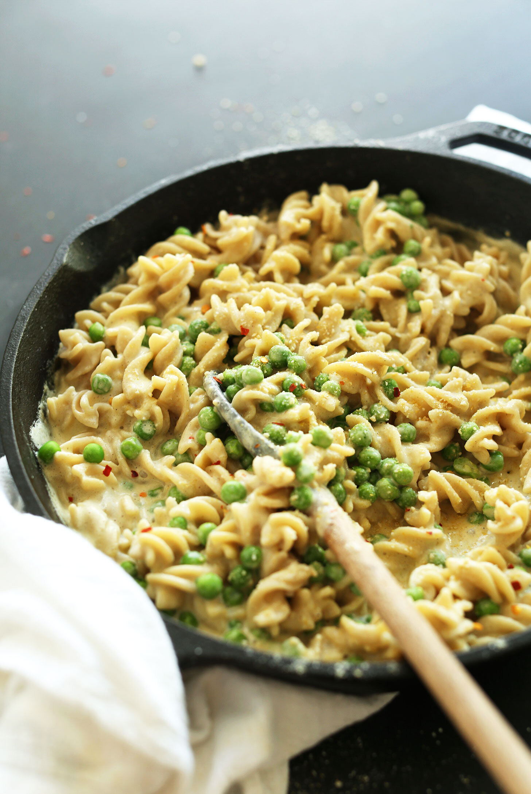
All Eyes On... [9]
All Eyes On: where apparently this time I just really really want chickpeas. these mini lemon rosemary cakes. so moist! this layered mocha cake. ugh gimme. these Korean…

Vegan Green Chile Cornbread (gf)
Ain't nothin' quite like some southern comfort food. This vegan green chile cornbread fills you with happiness and warmth. Perfect for an event or get together, this…

Vegan Triple Chocolate Skillet Cookie
Help I can't stop stress baking. But this triple chocolate skillet cookie is so good that I can't even complain. This recipe is fully vegan and can be made gluten free…
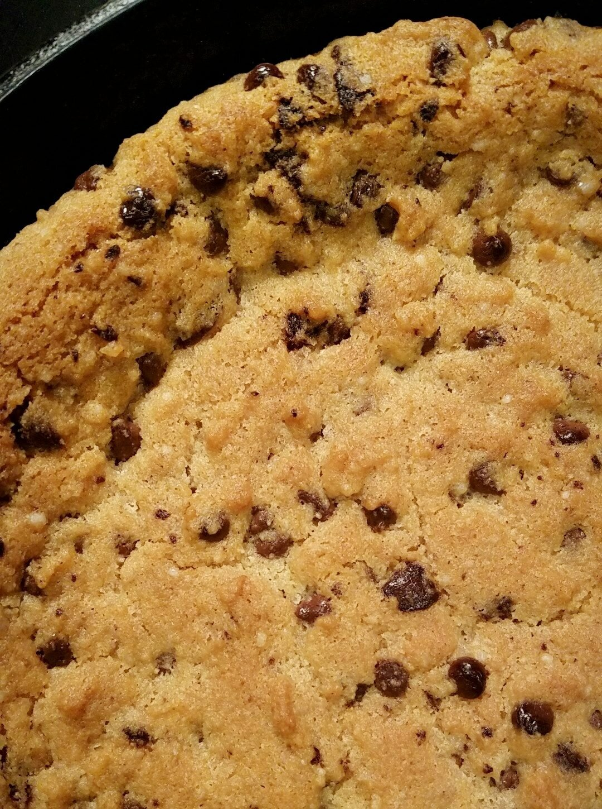
Vegan Chocolate Chip Skillet Cookie
Want to know a secret about healthy eating? It's not all about healthy eating. Exhibit A: Vegan chocolate chip skillet cookie. It's taken me a while to find a healthy…

Healthy 4-Ingredient Sweet Cinnamon Mugcake (v, gf)
A healthy, 4 -ingredient sweet cinnamon mugcake to wind down the day. This recipe is vegan, gluten free, sugar free and only takes 1 minute to cook! It's a quick…

Single Ladies Vegan Carrot Cake (gf)
In celebration of Easter this past weekend, I made a yummy vegan carrot cake! This cake is dairy free, gluten free, and sugar free. It is the perfect amount for one…

Vegan Blueberry Cheesecake Crepes
Crepes are slowly making a return back into my life after I nailed the texture last week. I made these vegan blueberry cheesecake crepes. They are crepes topped with…

NYC 2017 + Vegan Restaurants
Do you remember when I went to NYC last year ? It's okay if you don't :p but I definitely do. It was my first time ever to New York City, and I was so excited to be…
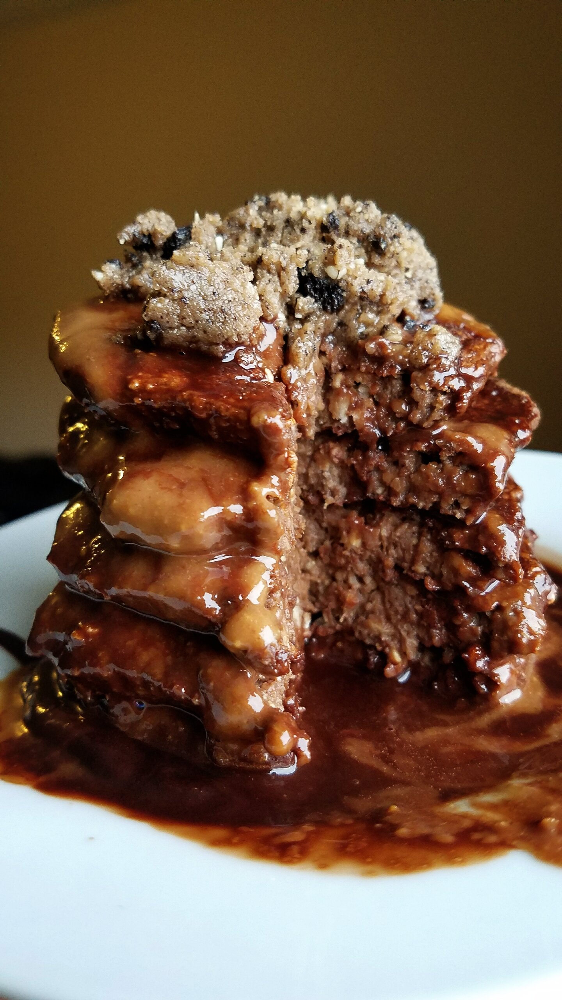
Chocolate Protein Oatcakes (vegan, gf)
Is there a limit of too much chocolate? Dial 1 for yes, 2 for no. Dial # to repeat these options. I fudged my meal up with some chocolate protein oatcakes topped with a…

Creamy Miso Vegan Ramen
There's nothing quite like a comforting, miso vegan ramen after a long, busy day. This recipe is full of robust flavors and ingredients. It is surprisingly simple to…
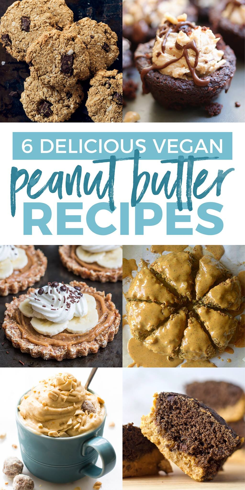
Peanut Butter Cheesecake Brownie Cups - 6 DELICIOUS VEGAN PEANUT BUTTER RECIPES
Do not fret, these truly decadent cheesecake brownie cups are here to complete your day. These bite-sized brownies have that perfect exterior brownie crust and are…
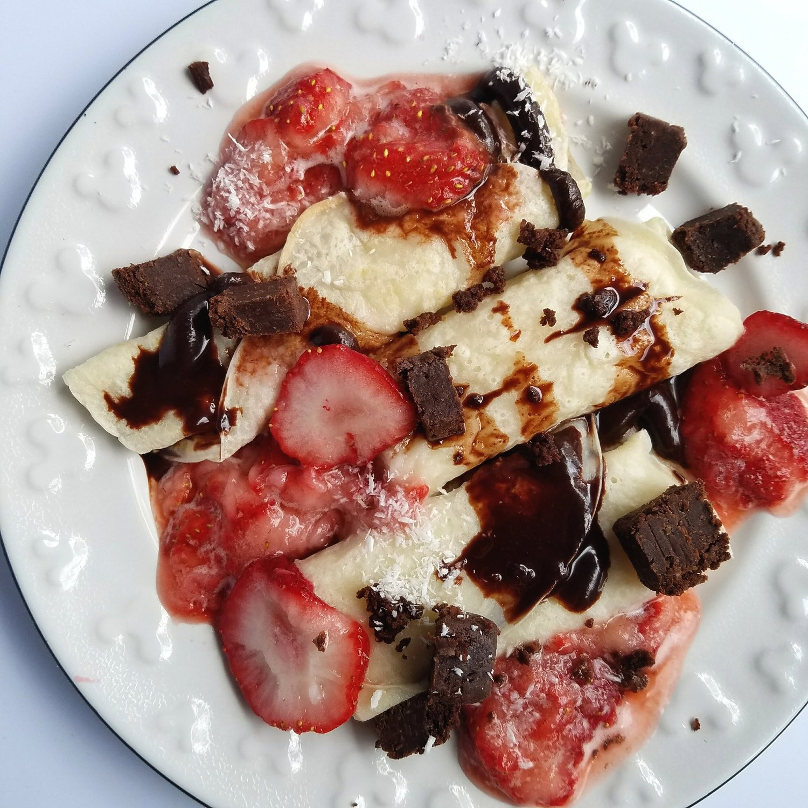
Vegan Strawberry Crepes (gf, healthy)
Oh CREPE! It's Monday again. How about these vegan strawberry crepes for consoling? Yes please. I had too much fun slow-poking over the weekend just playing Zelda and…
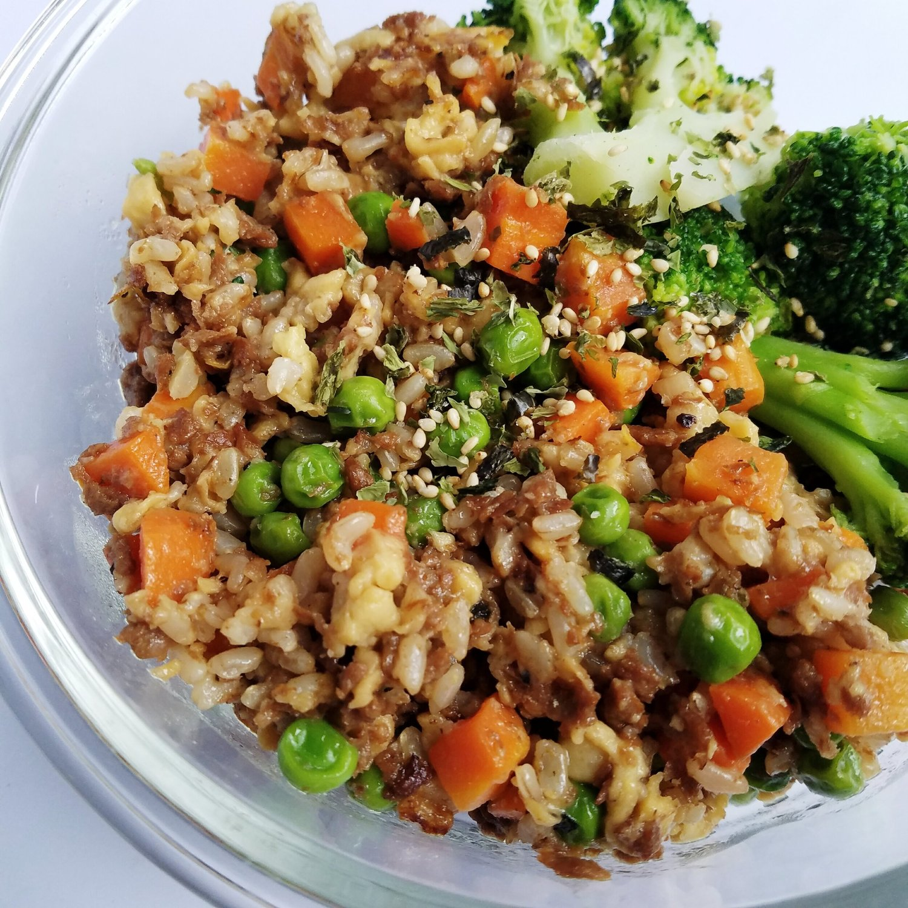
Vegan Tuna Fried Rice (gf)
I bet you never imagined you could enjoy vegan tuna fried rice, huh? This simple, 7-ingredient recipe yields a satisfying meat-free version of the enormously favorite…

The Fluffiest Vegan Coconut Donut (gf)
How cute and happy is this vegan coconut donut, especially for having its face devoured? This baked cake donut can be enjoyed guilt-free. It is entirely vegan, sugar…
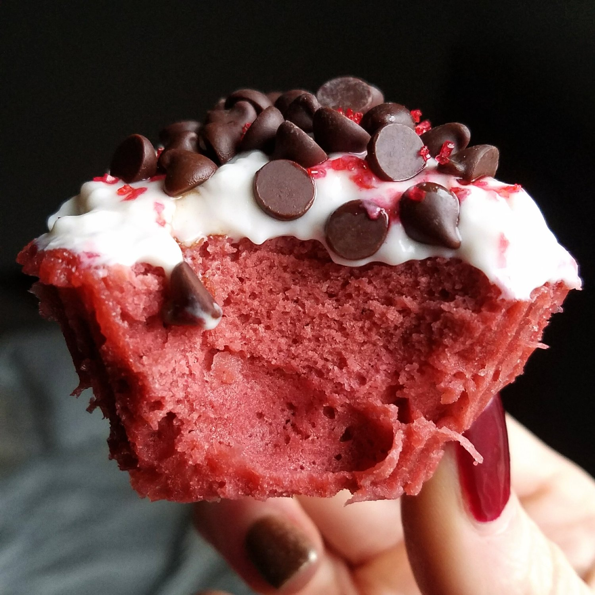
Healthy Red Velvet Mugcake (vegan, gf)
Looking for a quick sweets fix without the time or hassle? This single-serve, 1 minute healthy red velvet cupcake is exactly what you need right now! This sweet…

All Eyes On... [8]
All Eyes On: the edition in which I profess my obvious massive lady love for minimalistbaker. And thai food. Ain't no shame about it, either. this thai peanut zucchini…

Vegan Buffalo Chicken Bites
Ooh baby ohh mannnn. Vegan buffalo chicken bites are one of the few things I never expected to enjoy so thoroughly in my lifetime. But! This recipe is so satisfying…

Coconut Chocolate Chip Banana Bread (vegan, gf, healthy)
Sweet, cakey coconut chocolate chip banana bread ready to be snacked on. This go-to recipe is vegan, gluten free, and sugar free as well! Enjoy this healthy treat for…

Vegan Orange Chicken
Yes, vegan orange chicken can be done. If you're looking for a healthy alternative for the super-fried Chinese restaurant classic, you've come to the right place! This…
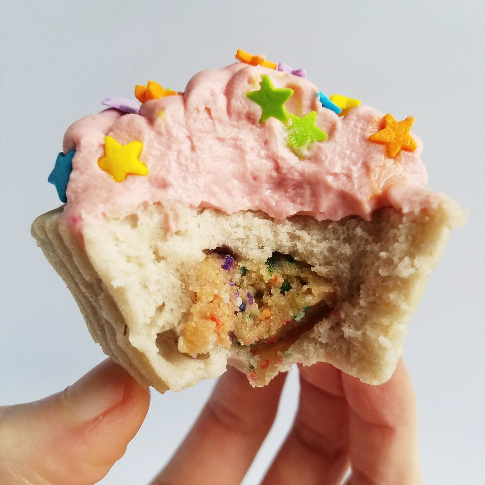
Cookie Dough Stuffed 1-Minute Cupcake (vegan, gf)
Food is so fun when you've got a healthy, cookie dough STUFFED microwave cupcake in front of your face. This 60-second recipe is vegan, gluten free, and sugar free as…

2017 Expectations
Happy 2017!! If you're a long-time reader of the blog, you know that I like to reflect with each new year. More so, I like to detail things I'm looking forward to in the…

Double Chocolate Microwave Cupcake (vegan, gf)
The most simple double chocolate microwave cupcake that only takes 60 seconds to make. This recipe is vegan, gluten free, and sugar free. Although seemingly indulgent…

Pumpkin Chickpea & Red Lentil Curry (vegan, gf)
A warm, comforting pumpkin chickpea & red lentil curry for the chilly winter nights. Whether you're looking for a quick lunch prep recipe, or just wanting a cozy dinner…
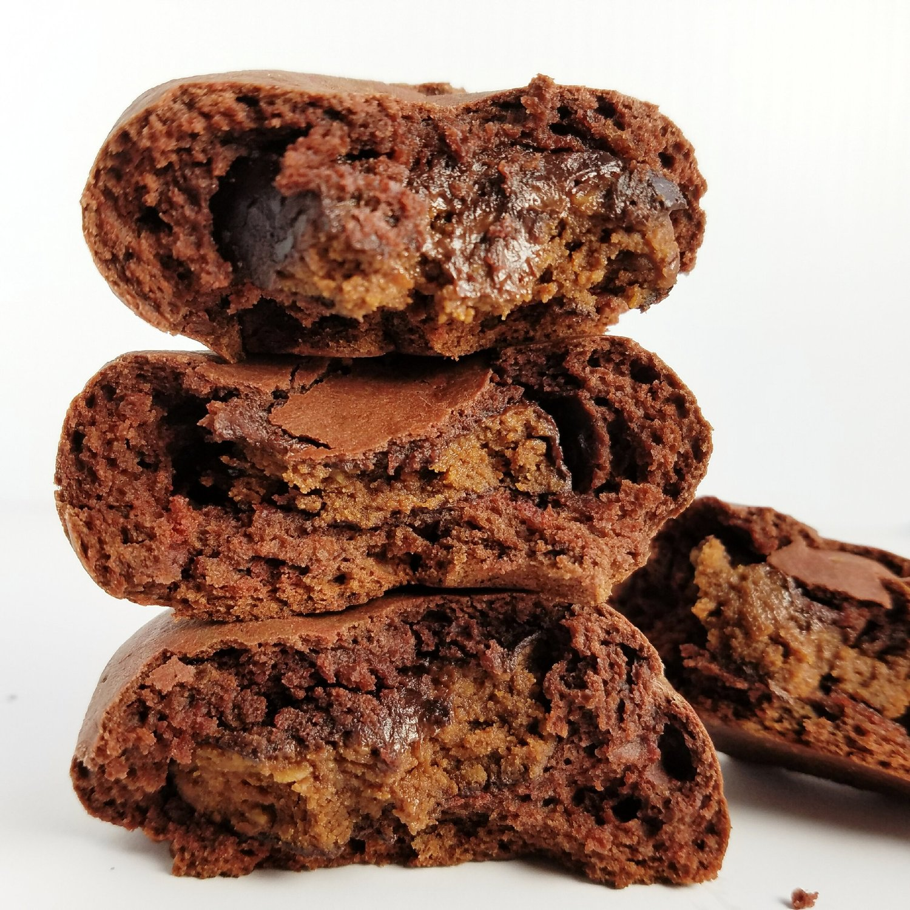
Vegan Stuffed Red Velvet Cookies (gluten free)
Wow okay yes I'll enjoy both of these stuffed red velvet cookies. This small batch recipe yields two sweet cookies with a crisp exterior yet soft, chocolate center. Even…
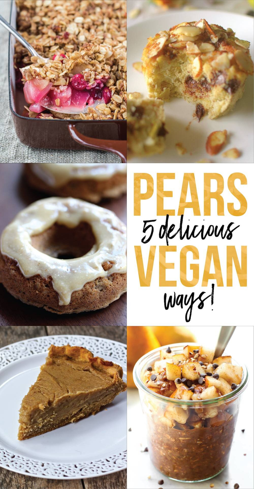
Spiced Pear Donuts with Cashew Caramel Icing - PEARS 5 DELICIOUS VEGAN WAYS
Cakey, spiced pear donuts topped with a satisfyingly sweet cashew caramel icing. These comforting donuts are vegan, gluten free, and refined sugar free. Feel free to…

Vegan Cookies and Cream French Toast (gluten free)
Vegan cookies and cream french toast? Say no more! Get ready for some thick, soft french toast with a sweet cookies n' cream icing and rich chocolate bites. This recipe…
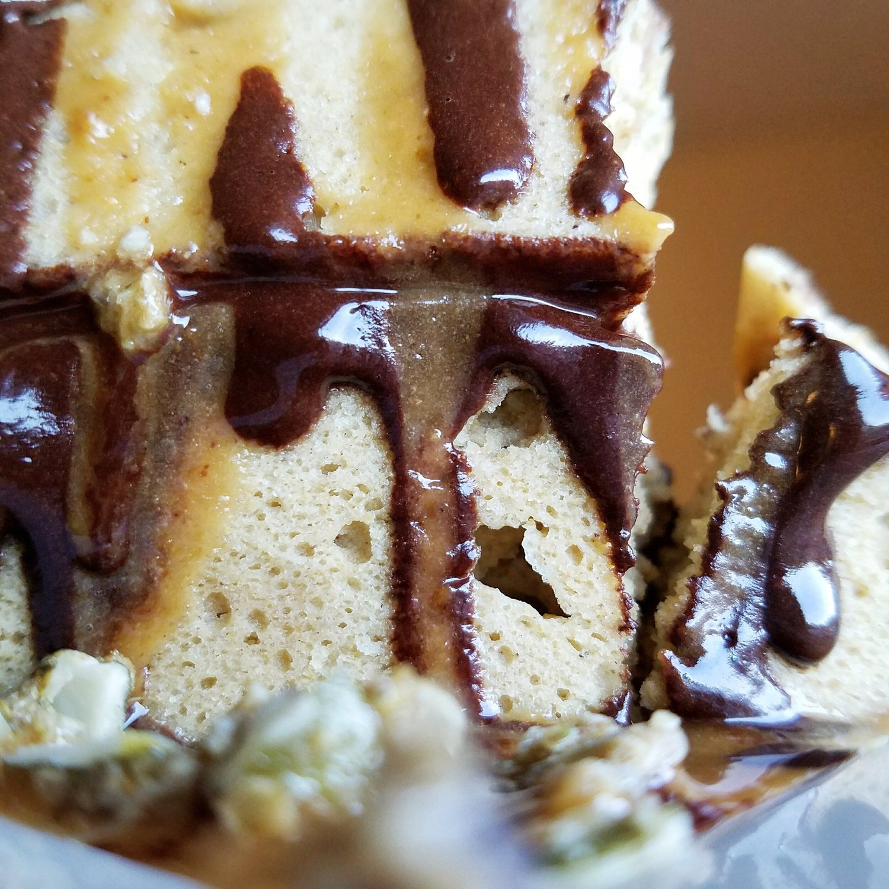
4 Ingredient Sweet Potato Cake (vegan, gluten free, healthy)
Did someone say 4 ingredient, 1 minute sweet potato cake? Yes, yes I did. This sweet potato cake is softer than the softest angel food cake. Not only is it delicious and…

Chili Pumpkin Meatlessloaf (VEGAN)
A comforting, fall-inspired chili pumpkin meatlessloaf for the vegan in all of us. This recipe only requires 7 ingredients and simple baking, making it perfect for a…

Pumpkin Spice Protein Smoothie (vegan, gluten free)
Just doin' pumpkin things with this pumpkin spice protein smoothie. I added a fancy chocolate swirl to complete the flavors. This recipe is so simple to make and perfect…
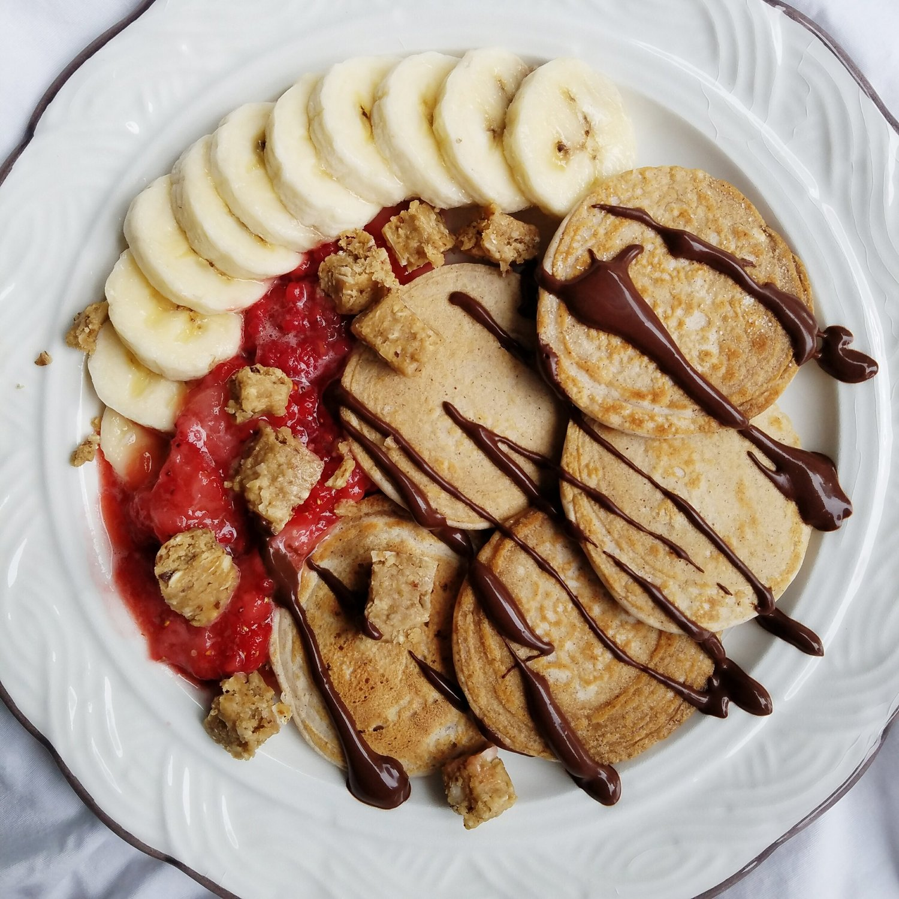
4-ingredient Apple Pie Pancakes (vegan, gluten free)
Apple Pie Pancakes for dinner because I'm an adult and I make the rules around here. These pancakes are quick to whip up and only require 4 ingredients! To make things…

Toasted Marshmallow Caramel Cake (vegan, gluten free)
Nothing is more heavenly than the flavor combinations of a marshmallow caramel cake, especially when you know it's healthy! This moist, sweet cake is completely vegan…

Salted Cashew Peanut Butter with Cinnamon (vegan, gluten free)
Creamy, salted cashew peanut butter spiced with a touch of cinnamon and a light roast. This sweet and salty combo is a simple to make variation of peanut butter that…

Fluffy Banana Bread Pancakes (vegan, gluten free)
On this episode of my little pony: pancakes are magic - fluffyyyy banana bread pancakes. These sweet, delicate pancakes are completely vegan, gluten free, and sugar free…
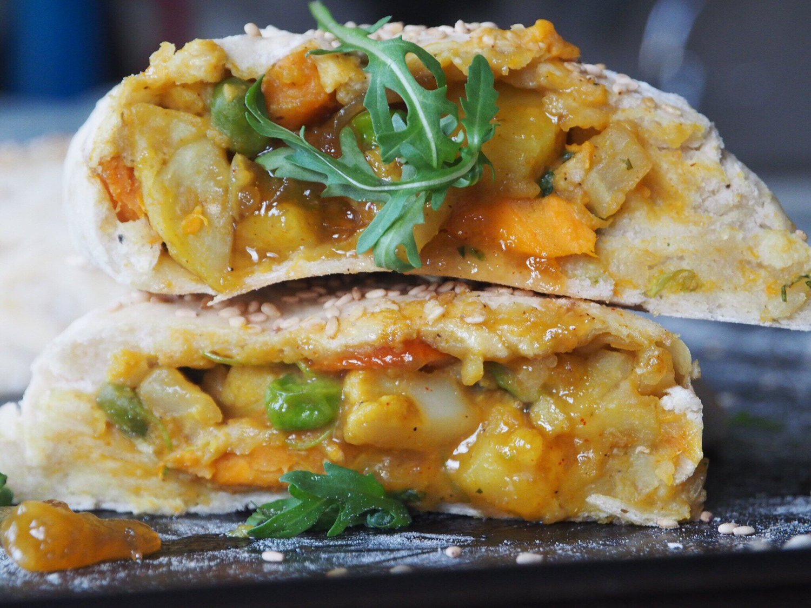
All Eyes On... [7]
Recipes I'm pining for lately, my gahhh. I seem to be in a Korean food kick! I can never get enough of it. this low fat cheesy vegan pesto . simple enough. this unique…

Caramel Chip Chocolate Hazelnut Cookies (vegan)
These thick and chewy caramel chip chocolate hazelnut cookies will melt your heart with its melty chips! These soft, rich cookies are made with wholesome ingredients…

Lavender Sweet Potato Cinnamon Rolls - 6 SCRUMPTIOUS VEGAN SWEET POTATO RECIPES
Warm, fluffy lavender sweet potato cinnamon rolls that will have you cheering with joy for fall. These comforting, delicate cinnamon rolls are vegan, dairy free, and…

Vegan Food in Atlanta
I had a friend visit Atlanta for the first time this weekend, so of course the weekend was full of yummy vegan food in Atlanta and good times! We went to so many places…

Nocciolata "Nutella" Crunch Truffles (vegan, gluten free)
These nocciolata "nutella" crunch truffles have a sweet, melt in your mouth exterior and a crisp, rich center. Not only is this recipe only 5 ingredients, but it takes…

Vegan Chocolate Mugcake (gluten free)
Today's meal brought to you by the color - Chocolate. Is that a color? Yes, it sure is. This easy 1 minute vegan chocolate mugcake tastes just like store bought…

Tomato Cream Zucchini Pasta (Vegan, Gluten Free)
Delicious, aromatic tomato cream zucchini pasta made with fresh tomatoes and herbs. But it doesn't take a complicated method or pro cooking skills to whip up this savory…

Vanilla Pumpkin Cake Bars (vegan, gluten free)
Fluffy, sweet vanilla pumpkin cake bars that will leave you smiling from having your taste buds hugged. This tasty, flourless treat is completely vegan, gluten free, and…

Pumpkin Seed Banana Bread (vegan, gluten free)
Sweet, delectable pumpkin seed banana bread. This recipe is completely vegan, gluten free, and sugar free! Whether you're looking for a new twist on a classic recipe, or…

Vegan Cheezy Pesto Wrap
The simplest, creamiest, cheezy pesto wrap you'll ever experience. And believe it or not, this recipe is fully vegan and dairy free! In under 3 minutes, you can…

Vegan Blueberry Cashew Breakfast Cookies - 7 SWEET SUMMER BLUEBERRY RECIPES
Sweet, soft baked blueberry cashew breakfast cookies that will definitely make you eager for the day to begin! These mouth-watering cookies are vegan, gluten free, and…

Vegan Blueberry Muffin Smoothie (gluten free)
Vegan blueberry muffin smoothie because I can't get enough blueberries lately! This striking, flavorful smoothie is naturally vegan, gluten free, and sugar free as well…

Cherry Amaretto Flourless Brownies (vegan, gluten free)
Cherry Amaretto Flourless Brownies. Vegan cherry almond brownies. Cherry almond black bean brownies. No matter how you put it, these fudgy, flavorful brownies are…

Vegan Blueberry Muffin Mugcake (gluten free)
Vegan Blueberry Muffin Mugcake that's as easy as 1-2-3!! This sweet, fluffy mugcake is completely vegan, gluten free, and sugar free! It takes less than a minute to…

Vegan Toffee Mugcake (gluten free)
Single serve vegan toffee mugcake made in 1 minute with just 5 ingredients? Yes - you don't have to do the math to know that this sugar free, vegan, gluten free recipe…
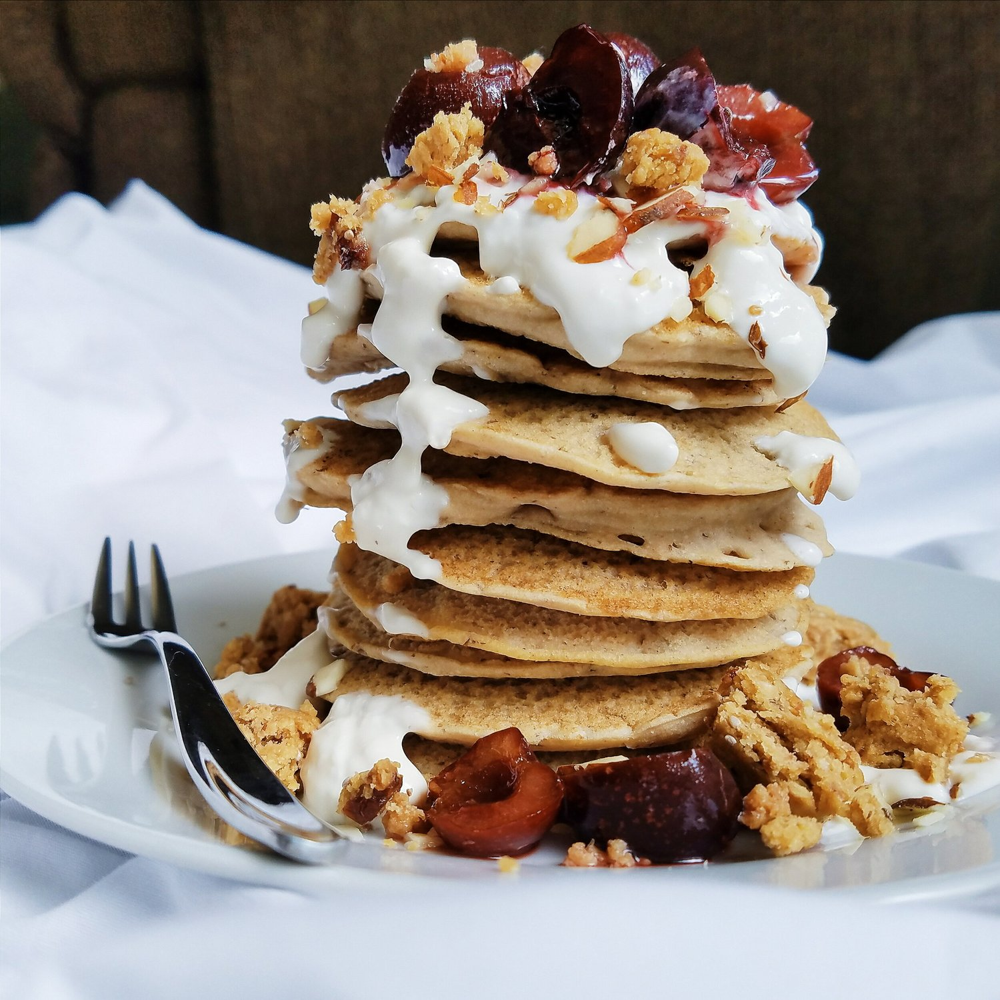
Cherry Cheesecake Pancakes (vegan, gluten free)
These healthy cherry cheesecake pancakes will have you questioning whether you're dreaming or in reality. Definitely in reality... These pancakes are soft and sweet with…

Orange Creamsicle Nice Cream (vegan, gluten free)
Goooood morning! Loving this ORANGE CREAMSICLE nice cream that I topped with buckwheat groats and raspberries. This recipe is just 2-3 ingredients and is such a unique…

Espresso Caramel Swirl Banana Bread (vegan, gluten free)
I've got this espresso caramel swirl banana bread all to myself. You read that right; this luscious banana bread is perfectly sweet and moist with bursts of bold flavor…

Teriyaki Veggie Burger Sandwich (vegan, gluten free)
I has a sammich. A teriyaki veggie burger sandwich! If you're needing some sandwich inspiration to switch things up, you've come to the right place! This is soo filling…

Raspberry Danish Overnight Oatmeal (vegan)
Raspberry danish overnight oatmeal with a seductive swirl is never not desirable. This oatmeal is all the flavors you love of a bakery sweet compact into a hearty and…

Pretty in Pink Smoothie (vegan, gluten free)
Soo sorry it's been a while since I've posted on the blog! I've still been posting on Instagram and Youtube, but I recently moved and it's been hard to keep up with…

Berry Bomb Smoothie (vegan, gluten free)
It’s definitely smoothie season ! Bright sun, outdoor fun, and refreshing smoothies like this berry bomb smoothie. It doesn't get any more simple than this recipe. This…
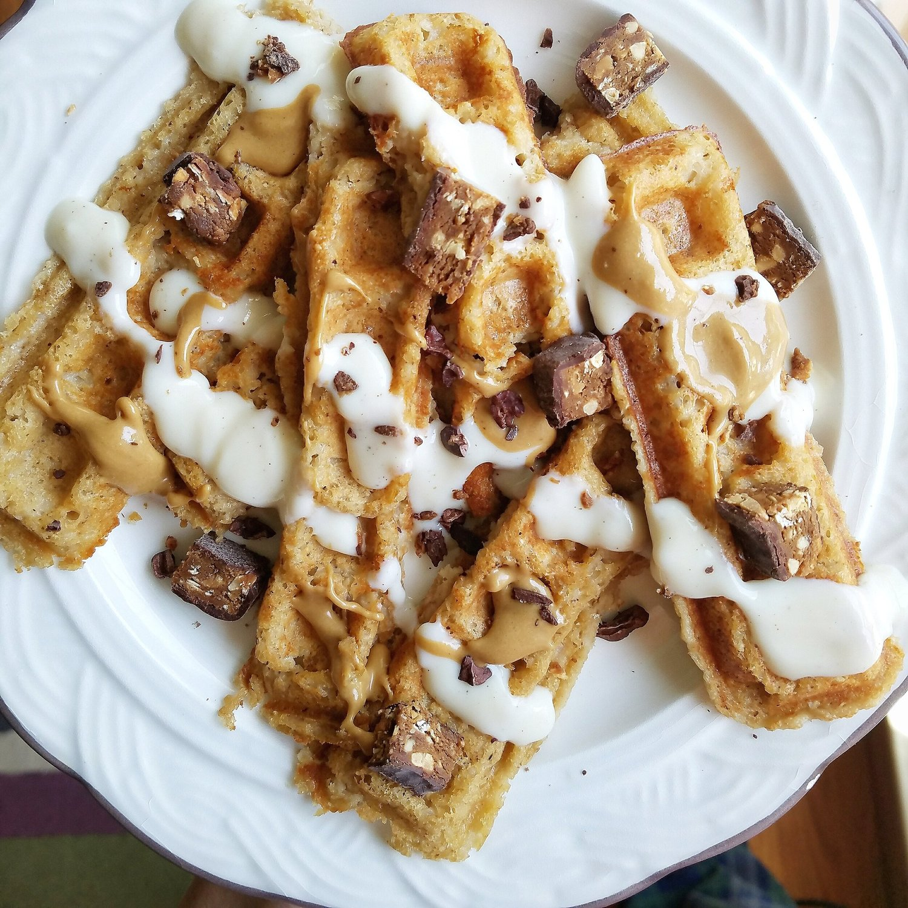
Easy Vegan Waffles (gluten free, oil free)
It doesn't have to be waffle Wednesday to enjoy these easy vegan waffles! Magically, these healthy waffles only require 3-4 ingredients. They are also sugar free, gluten…

Coconut Sticky Rice Rolls with Mango (vegan, gluten free)
This recipe for Sticky Rice Rolls with Mango is pretty different from the rest of my blog in the sense that this has....sugar! Although this recipe is still vegan and…

Salted Caramel Banana Ice Cream (vegan, gluten free)
Take a gander at this thick, salted caramel banana ice cream. This sweet and salty ice cream is a very easy, whole foods alternative to high fat, refined sugar-packed…

Vegan Berries and Cream Pancakes (gluten free)
Sending extra love your way with this stack of loving vegan berries and cream pancakes. This recipe is vegan, gluten free, and sugar free! The perfect morning wake-up…

Chai Spiced Banana Bread (vegan, gluten free)
This Chai Spiced Banana Bread is everything you love about classic banana bread. This recipe is moist, naturally sweetened with bananas, and has a unique spice twist…
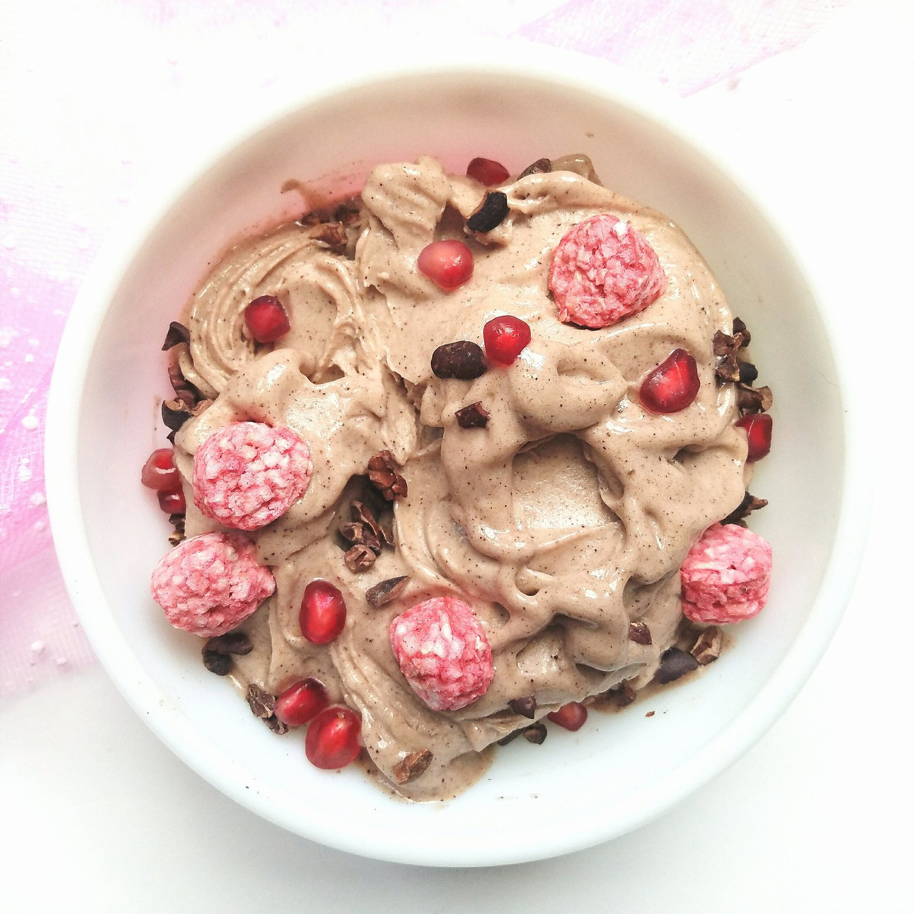
Energizing Berry Banana Ice Cream (vegan, gluten free)
Surpriseeeee, berry banana ice cream! But like, is it really a surprise anymore? I'm a definite addict now. I've found over the past few weeks that before cycling, my…

Oreo Banana Ice Cream (vegan, gluten free)
Creamy, dreamy oreo banana ice cream fixed up with all the best toppings. This ice cream is a healthy alternative to store-bought versions full of dairy, refined sugar…
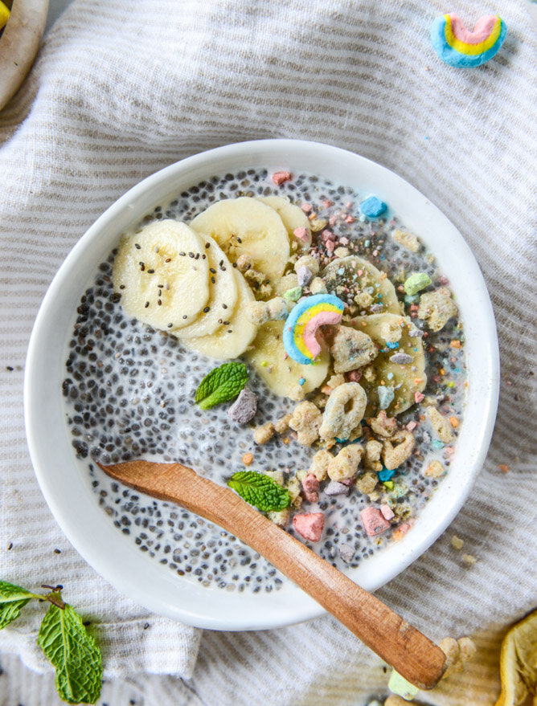
All Eyes On... [6]
chia pudding Stuff I want to eat like yesterday. this chia pudding made with cereal milk . absolutely genius. this sweet and spicy rice bowl . yum. these vegan char siu…

Caramel Oreo Protein Cake (vegan, gluten free)
Rich, healthy caramel oreo protein cake with drizzles of melted peanut butter. Don't be fooled by the seemingly unhealthy appeal of the pictures! This cake actually…

Mango Banana Ice Cream (vegan)
Happiness is...warm weather and a big bowl of mango banana ice cream for breakfast topped with cherries and cranberry acai oat bar. I'm way too excited about two things…

Cookie Dough Vegan Protein Poptart (gluten free)
Happy snacking to meeee with this cookie dough vegan protein poptart. It's a healthy alternative to the breakfast most americans know so well from childhood (or maybe…

Cherry Garcia Banana Ice Cream (vegan, gluten free)
Vegan, gluten free, nut free, low fat Cherry Garcia Banana Ice Cream?! It exists. This is a thing in the world that does indeed, beautifully exist. A sweet, cherry base…

Vegan Key Lime Pie Cookies - 5 CITRUS PACKED RECIPES
in black & white These healthy key lime pie cookies are lightly crisped on the exterior and perfectly soft on the inside. They are a marvelous blend of a snickerdoodle…

Vegan Chocolate Marshmallow Bars (gluten free)
These dense, rich double chocolate bars with a marshmallow topping take the delicious level over the top! Unbelievably healthy yet so decadent, these vegan chocolate…

One Pot Bean and Mushroom Stew (vegan, gluten free)
No cutting or pre-cooking prep needed to make this comforting, flavorful and protein packed one pot bean and mushroom stew. With easy cleanup after (one pot!), it is…

Zesty Fruit and Nut Crumble Bars (vegan, gluten free)
Sweet fruit amd nut cake with a granola crumble. With a cakey, dense base and a crispy, crunchy topping, the best of both worlds combine to make a perfect snack or…

Fluffy Vegan Chocolate Pancakes (gluten free)
How about a nice, fluffy stack of vegan chocolate pancakes?! Yep, I'll take some too. These pancakes are no optical illusion; they're extremely fluffy in addition to…

Chili Mango Salad (vegan, gluten free)
A simple, fruity, and delicious vegan salad packed with huge flavor. This chili mango salad makes it enjoyable to eat a nutritious, wholesome meal. Ready in no time! For…
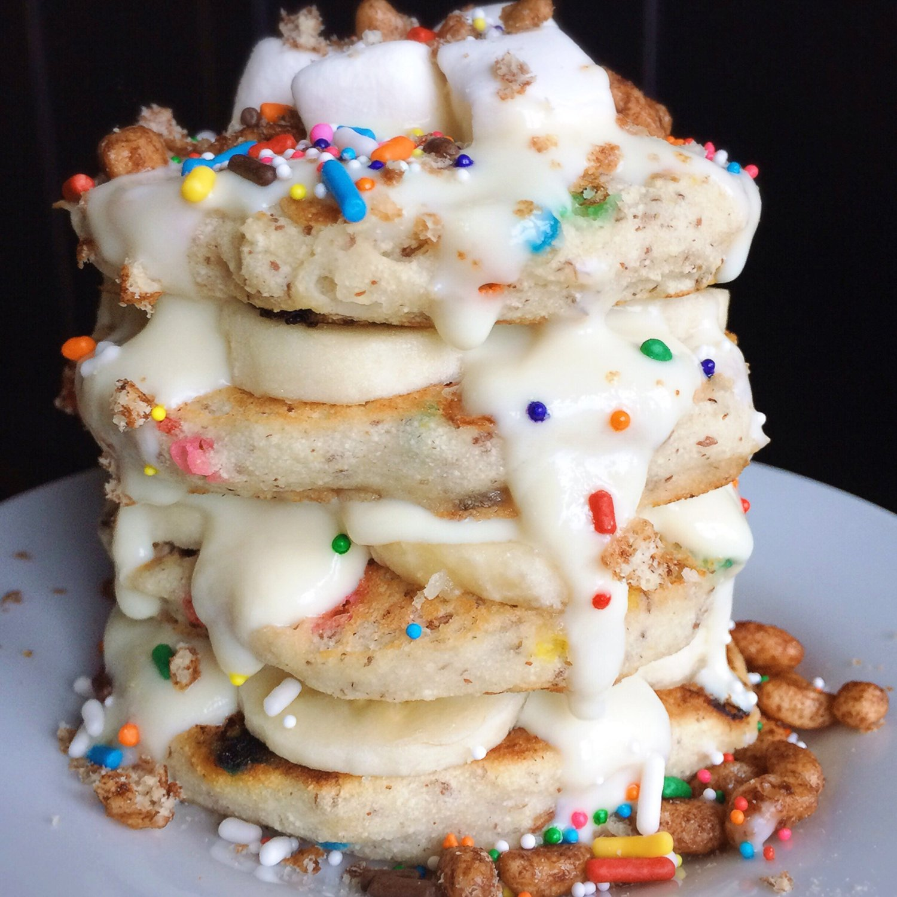
Vegan Funfetti Pancakes (gluten free)
These are the fluffiest vegan pancakes I've ever made. Vegan FUNFETTI PANCAKES! These are sugar free, dairy free, and even gluten free! And fun to the maxxxx. I used to…

Caramel Swirl Apple Cinnamon Cake (vegan, gluten free)
This aromatic, sweet apple cinnamon cake with a caramel swirl is sure to make your day brighter. This recipe is gluten free and vegan! Unbelievably this healthy option…

All Eyes On...[5]
all eyes on It's been a while since I've posted recipes I've got my eyes on! But, fear not! I have been collecting dreamy recipes. Enjoy! this recipe for creamy spinach…

Vegan 3 Ingredient Crepes
These are vegan 3 ingredient crepes! Soft, yet crisp; warm and comforting. These crepes are simple, sugar free, and vegan! Enjoy them for breakfast, or enjoy them for…

Toffee Overnight Oatmeal (vegan, gluten free)
When you're at the bottom of the almond butter jar and not even mad because you know that means you can fill it with OVERNIGHT OATS. Gotta get eeeevery last drop of…

1 Minute Caramel Filled Chocolate Cupcake (vegan, gluten free)
Delicious cupcake all for you in just one minute?! Yes! This 1 minute caramel filled chocolate cupcake is fluffy, simple, and contains no butter, eggs, or dairy. It is…
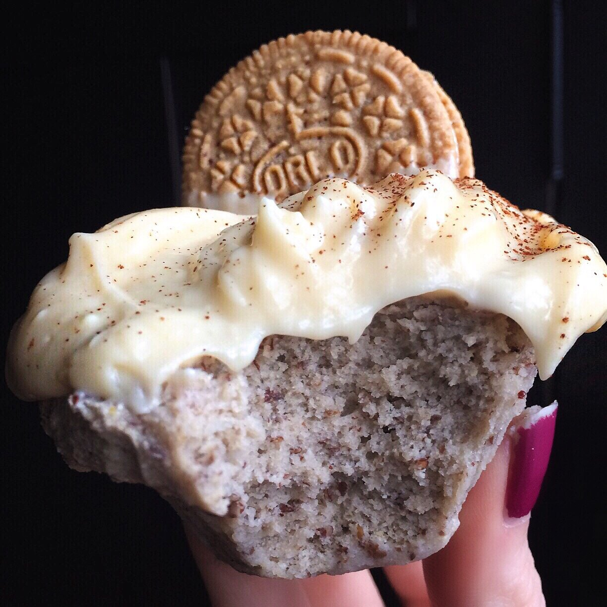
Vegan 1 Minute Cupcake (gluten free)
When you text a friend asking what you should make, and they say cupcakes...you make cupcakes. Cinnamon Bun VEGAN 1 minute cupcake complete with a cinnamon bun Oreo…

Simple Vegan Onigiri
Hiii. Have you ever had onigiri?! I made vegan onigiri!! I only ever heard of onigiri last year, but it's basically the best thing ever. A convenient rice pocket with a…

No Bake Vegan Lemon Pie (gluten free)
Did you know it is Pi Day?! I hope you celebrated! If not, whip up this Raw Vegan Lemon Pie for the occasion! Not only is this a gluten free recipe, but this vegan lemon…

Chocolate Cake + Peanut Butter Caramel Swirl (vegan, gluten free)
This Vegan Chocolate Cake is mesmerizing. Stare into my caramel swirlllll. Oooh. Ahhh. Not just that, but it's a PEANUT BUTTER caramel swirl and the cake has hidden…

Vegan Meatless Chili
Back to work today! I made this vegan meatless chili for lunches at work, but this would be a killer dinner, too! If you saw my latest life update video, you heard that…

My Trip to NYC + Vegan Restaurants
I'm back from NYC! Okay so this post is a little late.. because I got back Tuesday. But I had SO much catch up to do and I prioritized editing the vlog and another…

Green Ginger Smoothie (vegan, gluten free)
Hey guys, another guest share this week! I love to bring in other great recipe artists ( food is totally an art) with talents in the fields I am not the best in. This…

Chipotle Tofu Salad
Hiii giant chipotle tofu salad! I seem to be experiencing a brief love affair with huge salads again. Maybe it's the sign of spring approaching? It's not really gotten…

Superfoods!! - Chocolate Coconut Bliss Balls & Almond Acai Beauty Balls
Let's talk about superfoods! I absolutely hate how this word is thrown around everywhere now. Blueberries? Superfood. Pomegranate? Superfood. Eggs? Apparently a…

Chocolate Peanut Butter Dessert Pizza (vegan)
Mmhmm mhmmm. This is fantastic. I've made dessert pizza before by making my own base, but never have I made one with true pizza crust before. This is pretty miraculous…
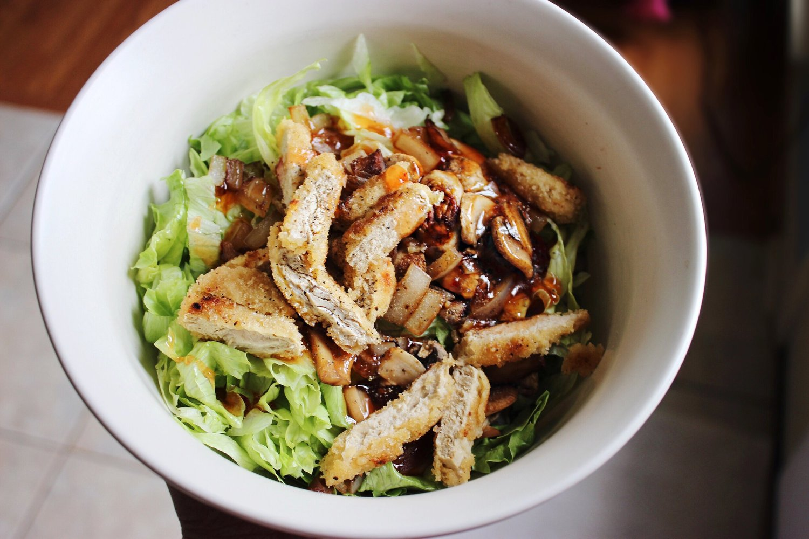
Vegan Asian Chicken Salad
Vegan asian chicken salad say what?!? I love how I was just saying on Youtube how I rarely get fake meat...and then this happens ha. haha. oh ok sure Kim ok we believe…
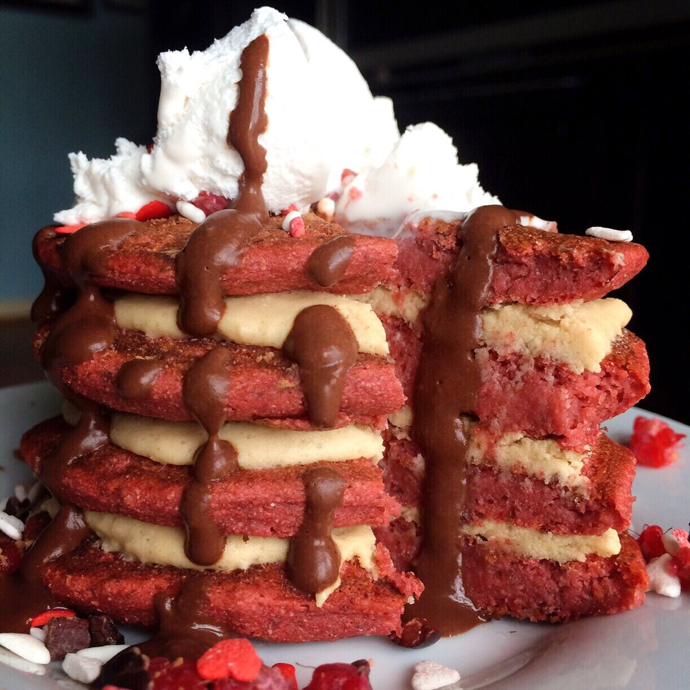
Vegan Red Velvet Pancakes
Oh no I'm getting festive. I just can't stop myself when it comes to Valentine's Day. It's such a cute holiday. What have we got here? Vegan Red Velvet pancakes layered…

Strawberries and Cream Quesadilla (vegan, gluten free)
Oh look more Valentine's Day food! Let me know when I'm overboard with valentines spirit but clearly I'm having fun. Strawberries and Cream quesadilla. Yeahh this is the…

Sun-dried Tomato Pesto Pasta
Good afternoon, friends! Or evening, crack of dawn, whenever you're reading - internet maaaagic. Today there's a super special post! I've collaborated with Izzy (writer…

Best Vegan French Toast
No lie. Best vegan french toast recipe for sure. When I first went vegan, I saw how most recipes used mashed banana rather than egg. I tried this out, and it was..okay?…
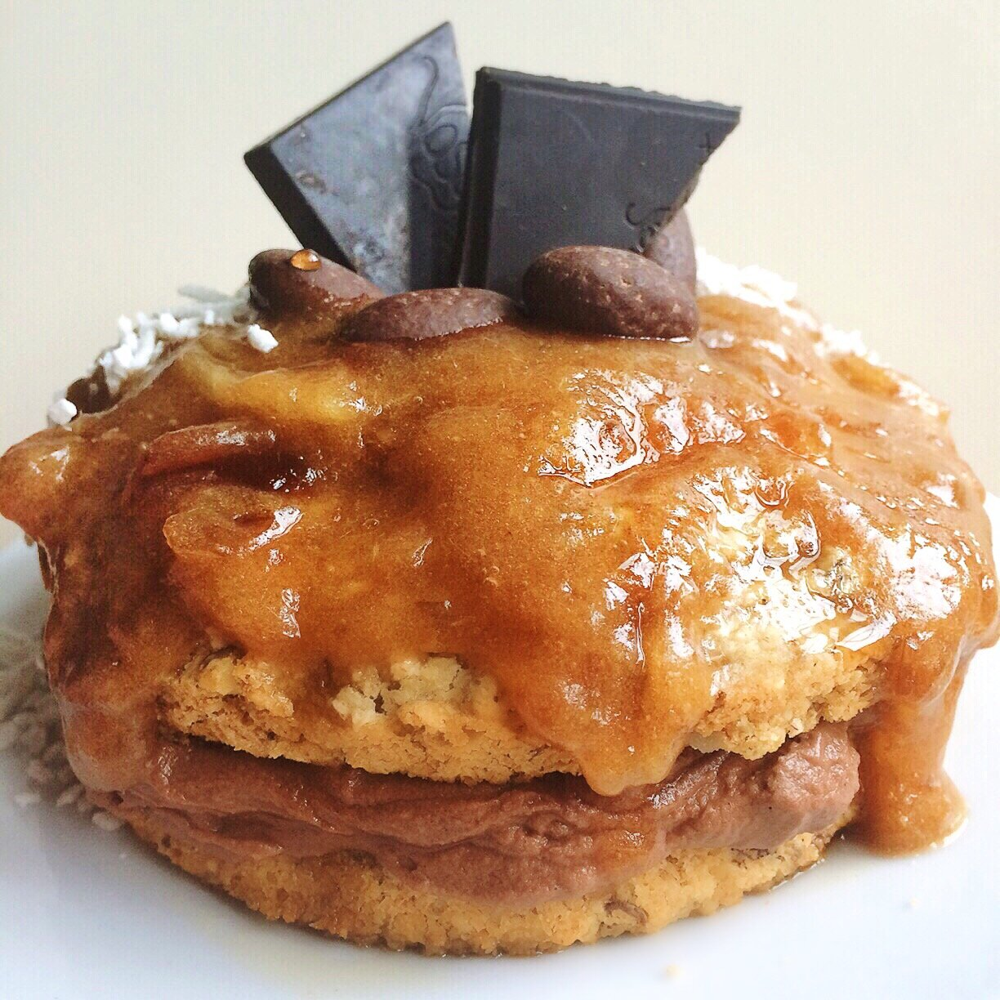
Coconut Almond Oat Cake (vegan, gluten free)
Hiii. Just look at this. Coconut Almond Oat Cake layered with a chocolate protein icing, salted caramel sauce, chocolate almonds, and coconut ash & banana dark chocolate…
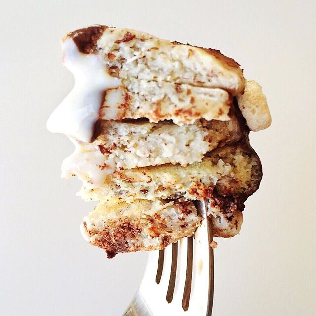
Vegan Vanilla Pancakes (gluten free)
Your turn to take a bite. Just look at it!! Basic vegan vanilla pancakes topped with a jumble of stuff potentially indiscernible, my bad - raspberries, chocolate sauce…

Sweet Chili Crispy Tofu
Look I made a savory!! I'm a proud lil squid. Why a squid, I'm not sure, but I feel like squids are proud lil guys. This whole dinner took 10 minutes to make! Feels…
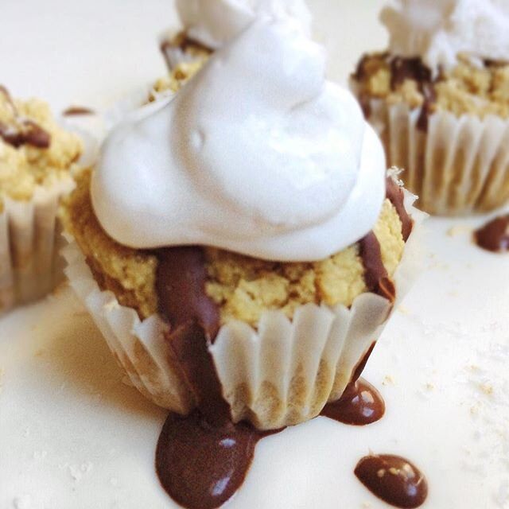
Mini Peanut Butter Coconut Muffins (vegan, gluten free)
Mini muffs! Mini peanut butter coconut muffins topped with some maaagical cocowhip that I've wanted to find foreverrr. Being able to destroy an entire muffin in one bite…
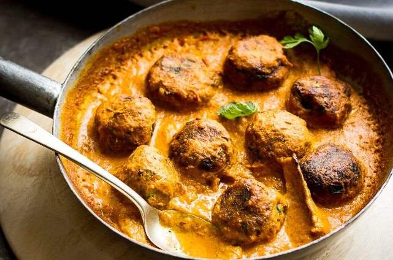
All eyes on...[4]
6-1 these vegan oatmeal patties . am intrigued. these vegan red velvet chocolate chip cookies . what even?! these banana blondies with a peanut butter icing. so dense…

Vegan Funfetti Cake Bars (gluten free)
I'm just gonna start off by saying I legitimately ate half this pan of vegan funfetti cake bars when they came out of the oven. Yeah. They're that good. How can you not…

Vegan Caramel Donuts (gluten free)
Vegan caramel donuts. Plus chocolate. Let's just take this in for a minute. They're gluten free, healthy, and even have added protein! Let's talk about protein and…

Peanut Butter Chocolate Chunk Blondies (vegan, gluten free)
Okay yep Square Bars are my favorite thing right now since they came out with a peanut butter flavor. I want to do soo much with them! I made these vegan & gluten free…

4-Ingredient Healthy Snickers (vegan, gluten free)
YOOO Square Bars just came out with a Peanut Butter bar and it's freakin amazing. Reminds me of a snickers missing the caramel so I MADE ONE WITH IT. So killerrrrrr…

16 Things in 2016 & My 2016 Book List
Here we go! The yearly list. You know, the list I make every year and every year gets harder and harder to write, by design ( 14 things in 2014, 15 things in 2015 , etc…

Healthy Salted Walnut Fudge (vegan, gluten free)
healthy salted walnut fudge, walnut fudge, vegan healthy salted walnut fudge, walnut fudge, vegan My task for the New Year's Eve fun: bring da sweeeeets. I'm all for…

Healthy Maple Pear French Toast (Vegan, Gluten Free)
healthy maple pear french toast, vegan Woooo it's been a busy couple of weeks. *deep exhale while I simultaneously shove my face with healthy maple pear french toast.* I…

Healthy 2 Ingredient Truffles (vegan)
healthy 2 ingredient truffles, healthy, vegan, truffles, healthy 2 ingredient truffles, healthy, vegan, truffles, healthy 2 ingredient truffles, healthy, vegan…
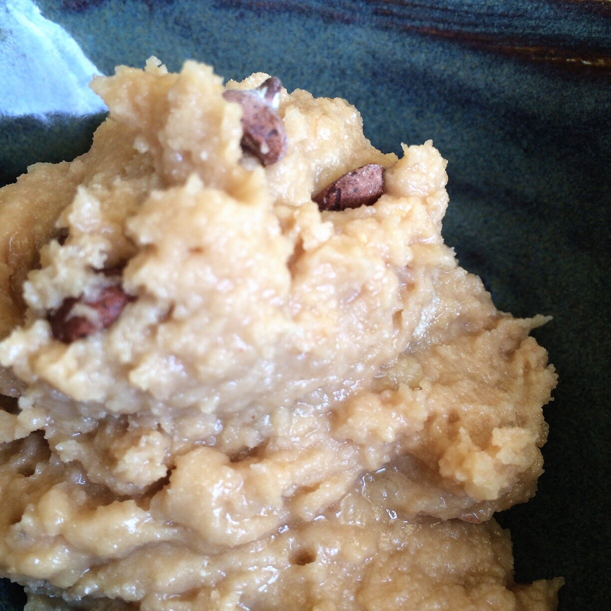
Vegan Banana Bread Dip (gluten free)
banana bread dip, banana, batter, cake, vegan, vegan banana bread dip bagel, vegan banana bread dip, banana bread, vegan, batter Vegan Banana Bread Dip. Sweet…
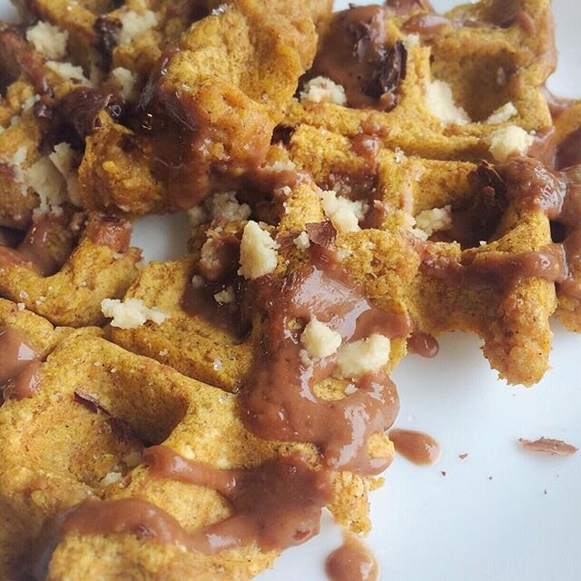
Pumpkin Waffles (vegan)
My first successful vegan waffles woohooo and they're PUMPKIN waffles. I'm evolving! Or something... I kind of gave up on making vegan waffles for a while because any…
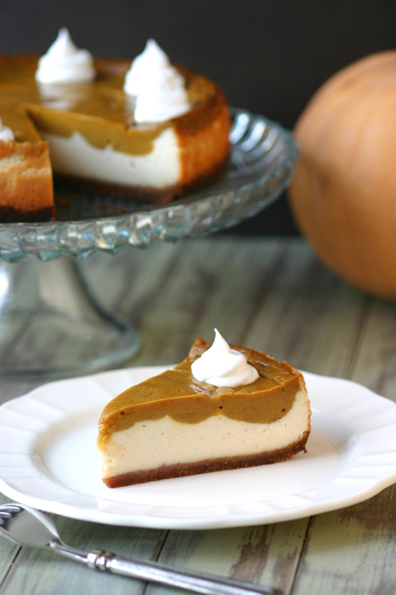
All Eyes On...[3]
pumpkin-pie-cheesecake-2 You know what time it is! this vegan-ized mushroom pepper steak. whoa. this copycat soba noodle bowl . oh my savory goodness. these double…

Cranberry Stuffed Pumpkin Muffins (vegan, gluten free)
Processed with VSCOcam with t1 preset Processed with VSCOcam with t1 preset Woooo pumpkin + cranberry is my new favorite thingggg since that oatmeal yesterday! Current…

Holiday Oatmeal! (vegan)
IMG_3194 IMG_3193 I feel like it's been so longggg since I've been able to update the blog lately. After my cookbook was released, I spent over a week back home in…
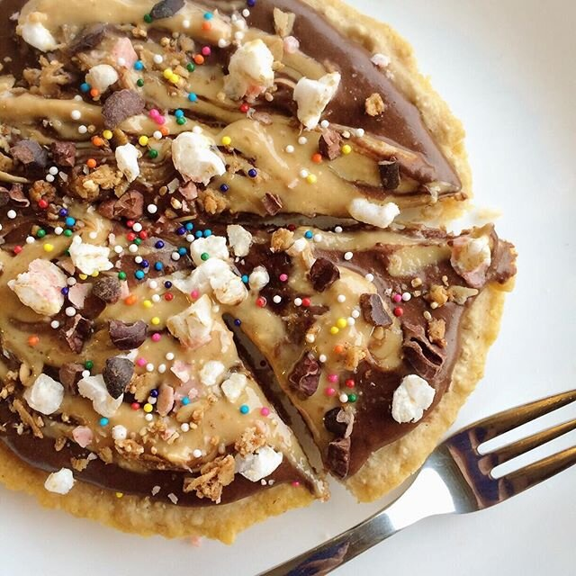
Dessert Pizza (vegan, gluten free)
12269902_781207102025295_1929141477_n Cut my dessert pizza into slices. Eat with a fork anyways. Makes sense. Dessert pizza with a chocolate toffee protein icing, cashew…

Cookbook Celebration (reader submitted images)!!
I've gotten SUCH AMAZING FEEDBACK on my cookbook from you guys!! #1 best seller on Amazon in a day! It makes me so happy to hear that you guys are loving the hard work I…

All eyes on...[2]
[ via amuse-your-bouche.com ] It's that time again!! Recipes I'm drooling over this week. these savory curry granola bars. savory bars whaaaat?! this slow cooker saag …

Ginger Pear Blondies (vegan, gluten free)
I'm so excited for the holidays! For some reason, holiday times make me more excited to get creative in the kitchen. Something about the flavors and smells of holiday…

Kabocha Lentil Curry (vegan, gluten free)
MMM yes. Lentils. My new best friend. I swear that every time I used to make lentils when I first started eating healthy, they always sucked so much. They ended up firm…

Marble Cake (vegan, gluten free)
Hey guys! This was such a fun recipe to create! I recently came across Gretchen's Bakery - she's been baking over 20 years and shares crazy awesome dessert recipes like…

General Tso's Cauliflower (vegan)
This dish made my day todayyyy. This morning I woke up in a really bad mood. Like. Really bad... Last night wasn't the best and ended with my dog being stuck in his own…

Pumpkin Stuffed Dough Balls (vegan, gluten free)
I posted a bunch of recipes I have my eyes on, and I've been drooling over them ever since. So I picked my top 4, created a shopping list of ingredients, and got it all…

All eyes on...[1]
I've been doing a lot more blog browsing lately rather than Instagram perusing. I don't know about youuuuu buttt.. it's really hard to save Instagram recipes/posts you…
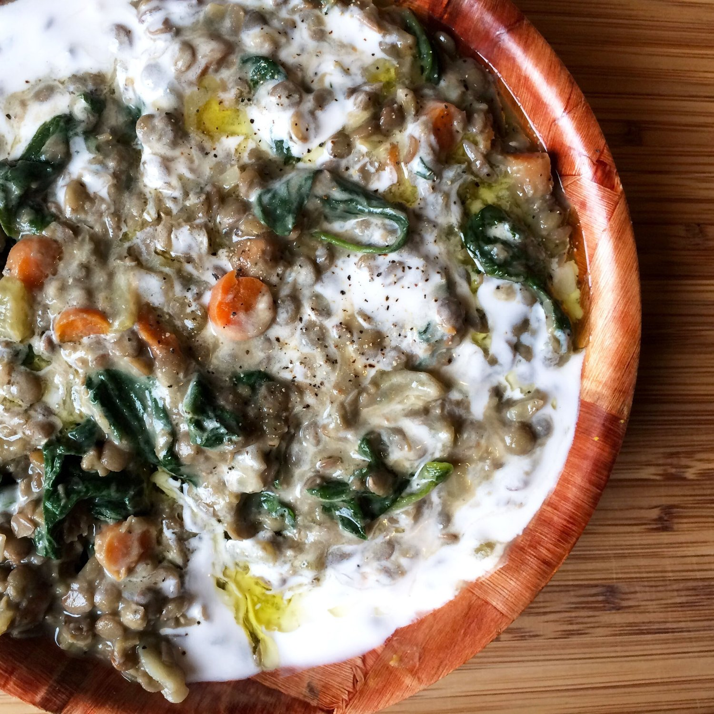
One-Pot Creamy Lentil Stew (vegan, gluten free)
I'm not the biggest fan of lentils. I almost avoid them with great effort. I'm also not a fan of soups most days. I don't know why, but I'm not. Stews are kind of an in…

Chocolate Chip Gingerbread Bars (vegan, gluten free)
Chocolate Chip Gingerbread Bars have me in heavennnn. Boyfriend asked me why I didn't save these for the cookbook because they're so good hahah but the book is made and…

Banana Bread Pancakes (vegan)
Pretty sure I just experienced the truest meaning of "pancake" :D mini cake on my plate. Banana bread pancakes layered with a vanilla protein spread topped with banana…
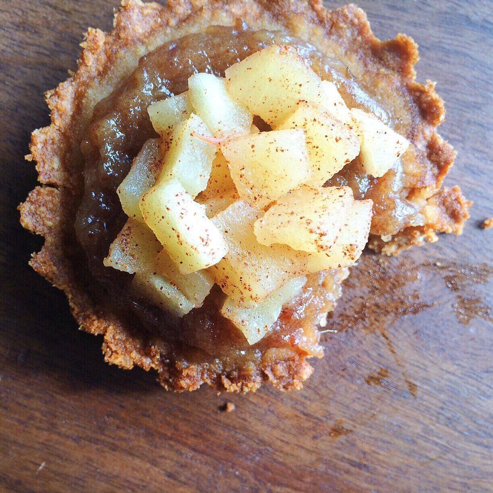
Caramel Apple Tart (vegan, gluten free)
CARAMEL APPLE TART my house smells amazing right now. And this is single serve wooooop!! Im finally definitely in Fall mode. I've got Nightmare Before Christmas music…
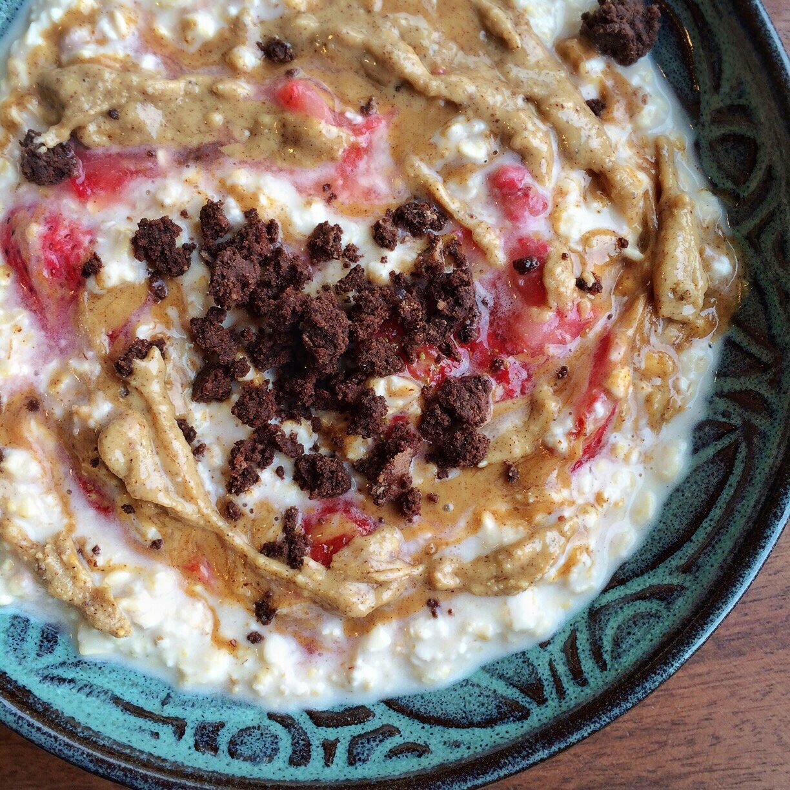
Strawberry Cheesecake Overnight Oatmeal
Raise your hand if you think nut butter is a masterpiece of its own? If not, shhhh, no, that opinion doesn't actually exist. It's just so beautiful. Strawberry…

Healthy Butternut Squash Soup [GUEST POST]
Butternut Squash Soup 1 Butternut Squash Soup 2 Butternut Squash Soup 3 Butternut Squash Soup 4 Hey guys! A little something different this week. :) I decided to do a…

Fudgey Wudgey Brownies (vegan, gluten free)
Baking, why you so fun?? I wanted some super fudgey brownies and super fudgey brownies is what I got. I love it. They're sooo good topped with chocolate brownie coconut…
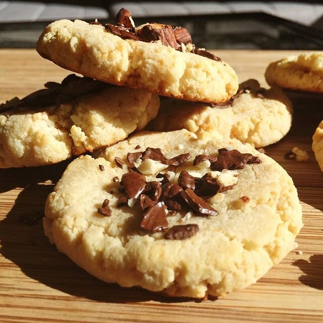
Chocolate Almond Shortbread Cookies
These are. Quite possibly. The best cookies I've ever made. Which is reassuring since right before this I baked the worst fail recipe ever so it all balances out I…
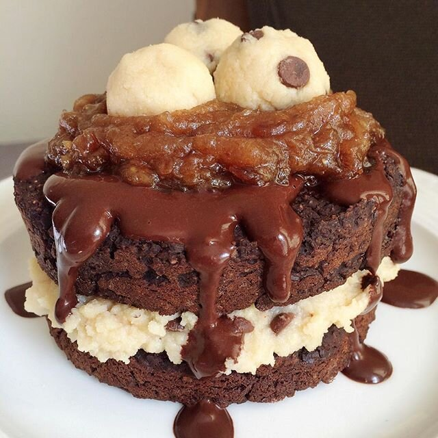
Chocolate Protein Cake (vegan)
Every now and again I like to pretend I'm @tumblinbumblincrumblincookie . It's a good life. I like to imagine my days filled with huge dollops of peanut butter, fancy…
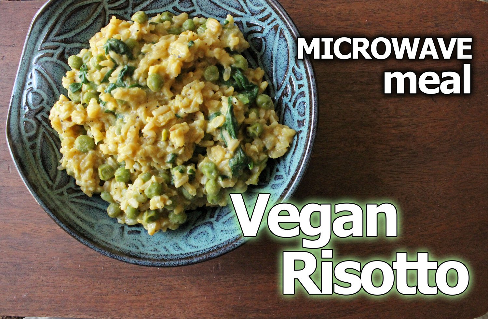
Microwave Risotto (vegan)
After moving and having to live the first few days with no oven, toaster, microwave, etc, I got an idea to start doing "microwave meals" on my youtube channel since you…
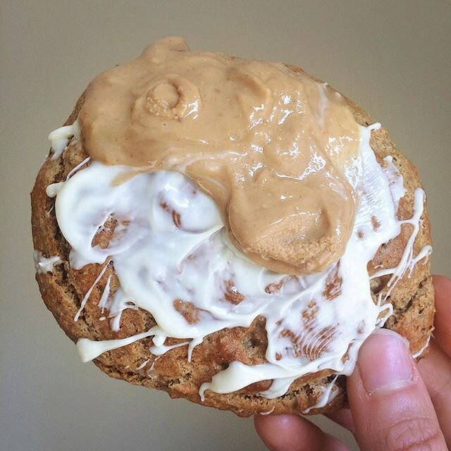
Single Serve Cashew Cookie
Phenomenal: highly extraordinary or prodigious; exceptional. See also: cookie that Kim ate on September 30, 2015. I rode my bike today. I deserve a cookie. Yummy nummy…

Lemon Maple Tahini Buddha Bowl (vegan)
Oh hey lookie. The rare savory post whoa what long time, no see. Idk why but I've really been loving savory lately. And rice. Yes, rice. Mmmmmm rice love is forever. SO…

Banana Pecan Protein Cake (vegan)
Baking is my therapy. And I'm kinda obsessed with the texture of this okkayyyyy. Banana pecan protein cake! It's like banana bread, but cake? Idk it's gooood. That's all…
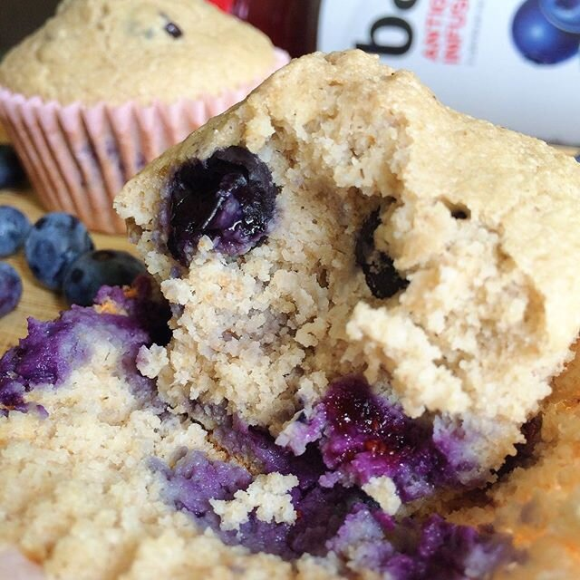
Blueberry Muffins - Classic!
Love how the texture of these turned out!! Fresh and fluffy goodness worth waking up for! These muffins make for a quick snack on the go. Inspired by the #BreakfastByBai…

Coconut Macaroons with Zuddha Coconut Oil
Chocolate dipped coconut macaroonnssss!! I've always wanted to make macaroons, given my burning love for coconut :p, but I thought it'd be hard to make?? NO. It was…
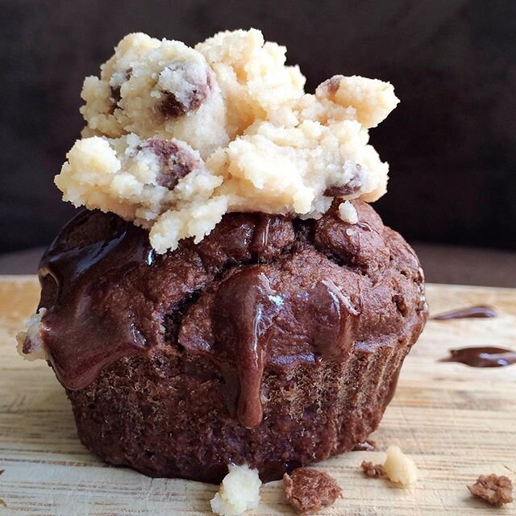
Chocolate Cookie Dough Cupcakes
Yeeee - post workout snackie. I gots mahself a road bike since my new town is soo bike-friendly and I am in love with it. I could ride every single day. It's such a…

Mint Chocolate (Black Bean) Brownies
Sundays are for baking. Literally all day. These mint chocolate black bean brownies are so fudgey and dense!! This is a good easy recipe to try! Pretty sure brownies are…
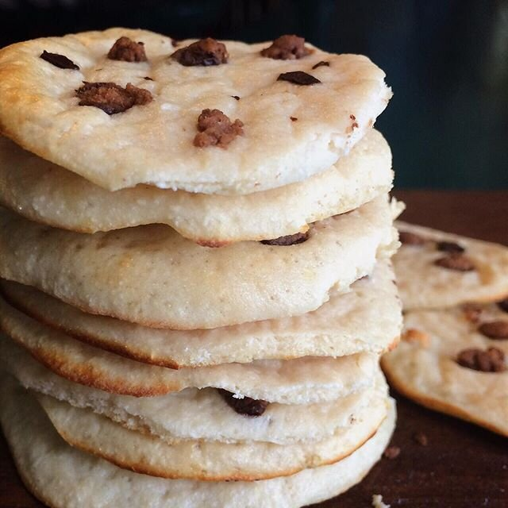
Chocolate Chunk Caramel Cookies
Chocolate chunk caramel cookiessssss. 249 calories for the entire batch so. That's rad. I announced the winners of my quest nutrition giveaway on Instagram so check that…
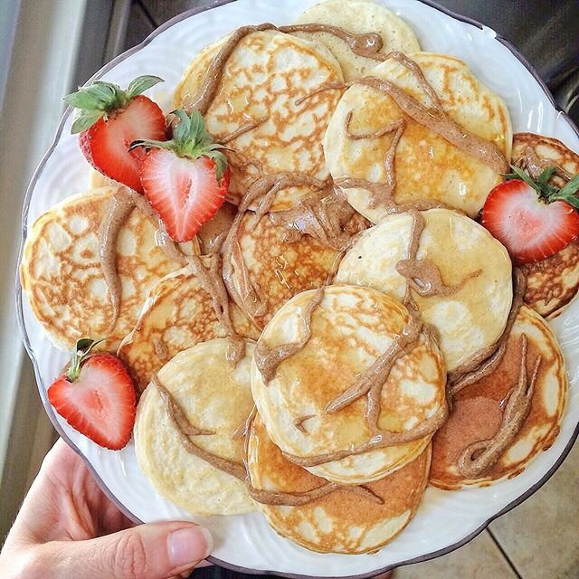
Cinnamon Swirl Protein Pancakes
Cinnamon swirl protein pancakes topped with French toast cashew butter (sweet spreads) and sugar free syrup. Strawberries for giggles since I'm brownfoodclub-ing so hard…
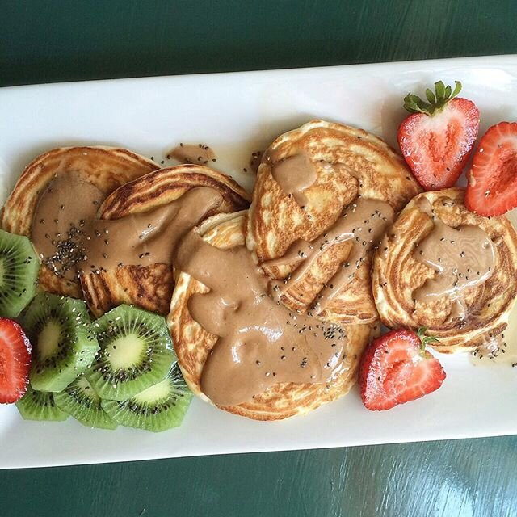
Peanut Butter Protein Pancakes
Protein pancakes & crepes kick lately! They're just too easy and also filling!! Now that I'm able to really feel good and workout 5-6 days a week again, it's kind of…

Protein Crepes & Life Taking Over
Bananas are very slowly but surely taking over my Instagram feed. Not even maddddd. Two big, yummy protein crepes filled with sliced banana & topped with a chocolate…
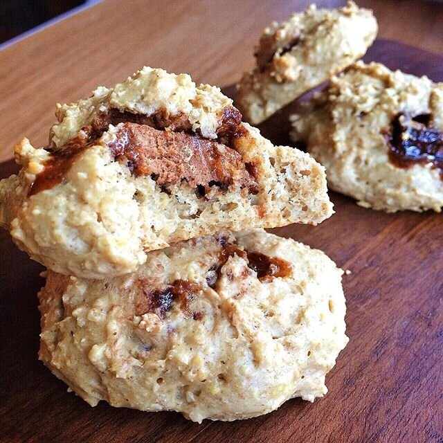
Salted Caramel Protein Cookies
Mmm salted caramel protein cookiessssss filled with gooey goodness. Found a nifty recipe by @swallowfitness on Instagram and made some adjustments to make these yummy…

New Puppy, Moving, & More
Heyyyy so um yeah. Lots of stuff has been going on. First off, I got my puppy!!!!!! He is the sweetest thing and I love him so much. He pees everywhere, can't handle…
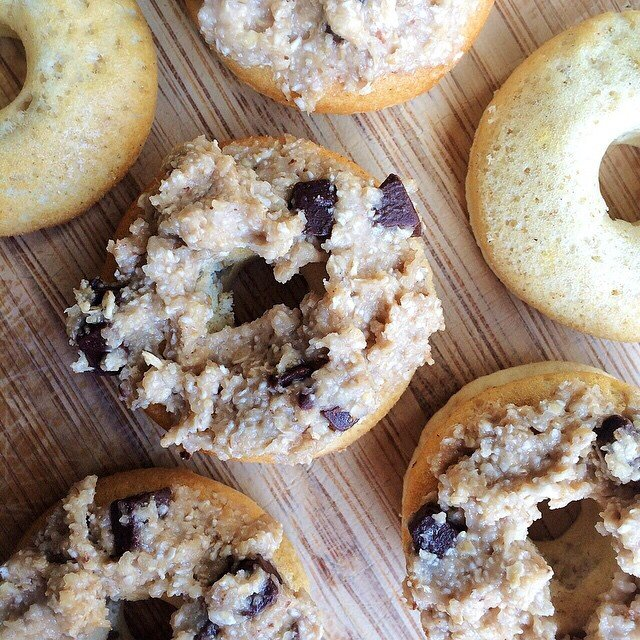
Cookie Dough Donuts
This is a late post, but I wanted to show you the crazzzyyyy good itty bitty mini cookie dough donuts I made before rock climbing the other day. It makes 12 mini donuts…
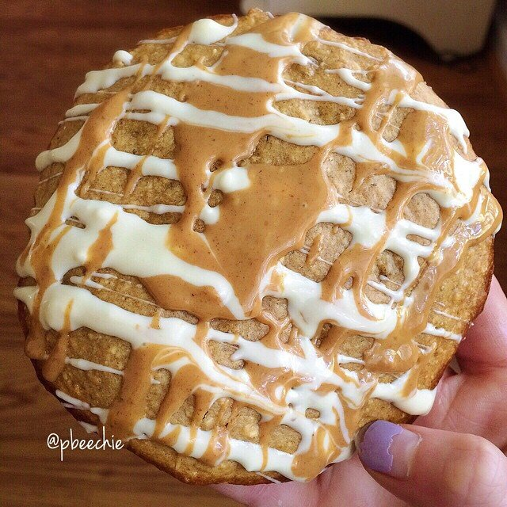
Chocolate Chip Peanut Butter Cookie (Single Serve)
Chocolate chip peanut butter cookie drizzled with sugar free white chocolate and peanut butter - baked on periscope for allll to seeeeee. Add me if you want to see me…
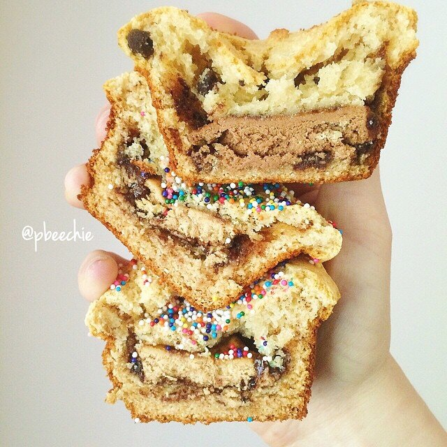
Chocolate Chip Cookie Cups + Chocolate Caramel Filling
FIRST OF ALL. This. Is. Amazing. I could eat a million of these cookie cups. Chocolate chip cookie cups stuffed with chocolate chip caramel. HNGGGGG. I'm mind blown that…
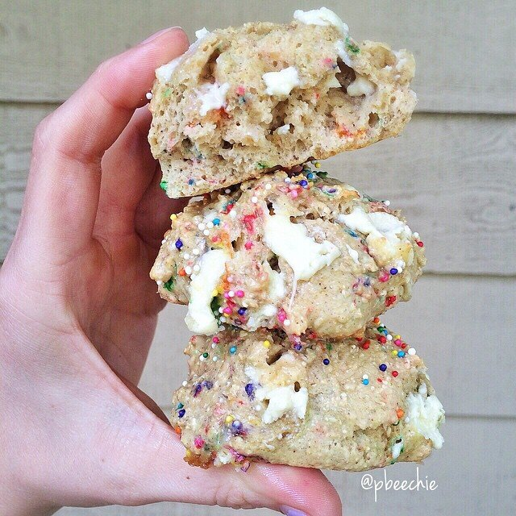
White Chocolate Funfetti Protein Cookies
White Chocolate Funfetti protein cookies. Oooh so good!!! Just what I needed. Procrasti-baking all of Sunday because this weekend was fun but long and now I don't want…
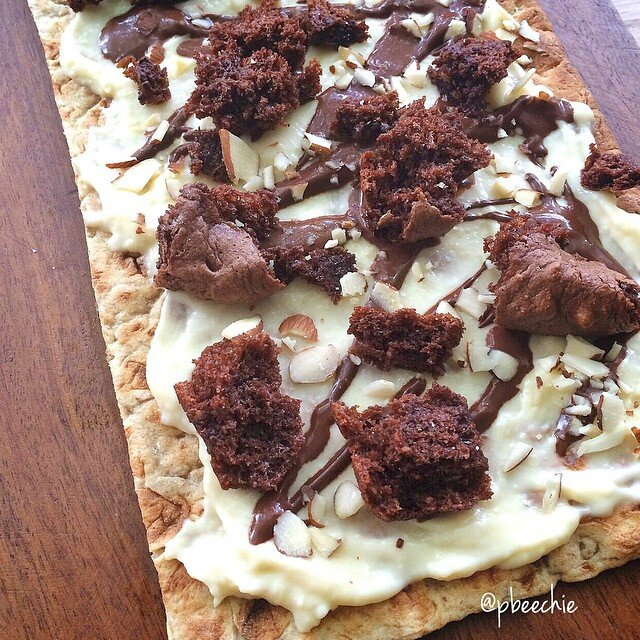
Chocolate Cheesecake Dessert Flatbread
Chocolate cheesecake dessert flatbread hayyy. Sorry it's been sooo long since I've updated life on my blog!! Lots of things have been happening in my life & big…
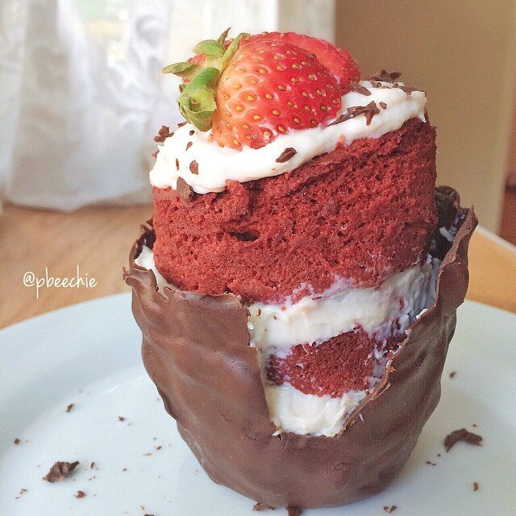
Red Velvet Mugcake
Know what feels more powerful than somehow miraculously leaving Target with exactly what you went in for? Being able to devour year entire meal including the cup it's…

Peach Creamsicle Poptarts
I am having way too much fun baking lately. I decided to make HEALTHY peach poptarts topped with a peach creamsicle glaze!! This. Is. Heaven. I am so happy with this…

Smoked Salmon Salad
No boring salads allowed!!! Only the coolest of the cool salads are allowed into the flavor party. I made a smoked salmon salad to take hiking with Jesse this past…
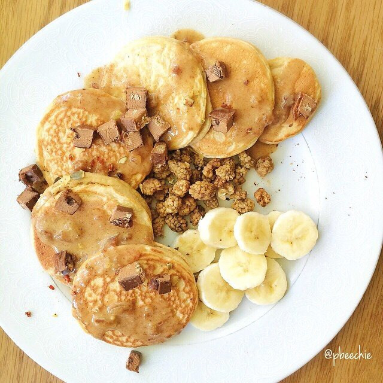
Fluffy Peanut Butter Protein Pancakes
Pancakes: merely a vessel for which to transport toppings to their ultimate destination aka my mouth. I made the most fluffy protein pancakes today and wowow gotta…

Cocoa Nana Ice Cream
Good vibes :) ️Cocoa banana 'nice cream' topped with my go-to cookie dough & cocoa almond square bars pieces! Doing what your heart dictates brings so much peace and…
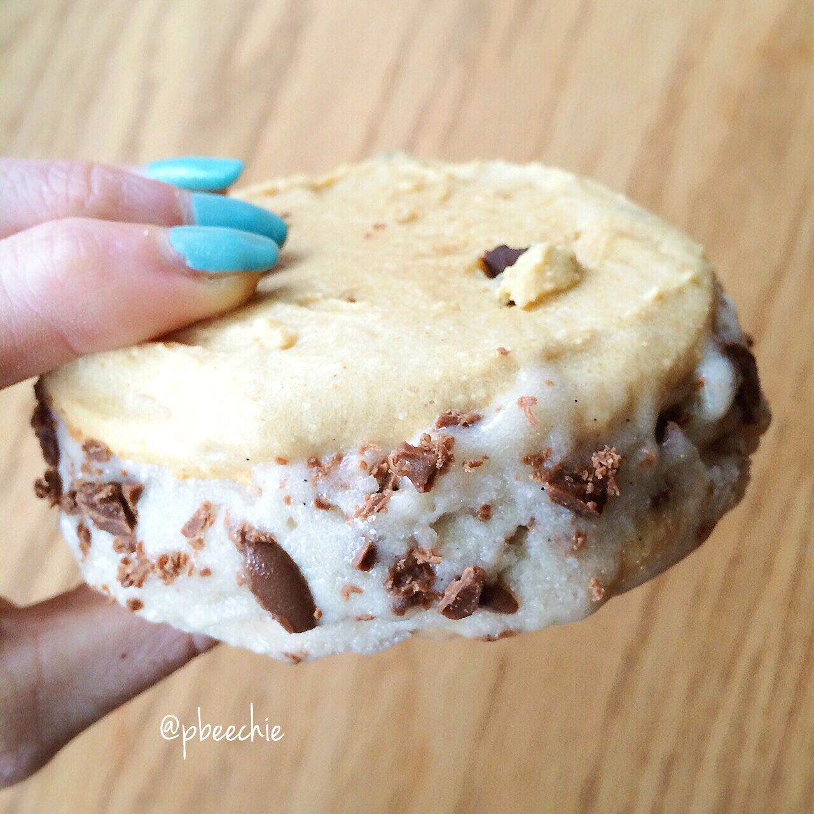
Chocolate Chip White Chocolate Cookies
Ooo I gots mahself an ice cream cookie sandwich!! Cookies of choice? Chocolate chip white chocolate protein cookies of course. Fave cookie recipe I do by far!! In the…

Creamy Broccoli Salad
Step into my maaaagical forest where the trees continue forever - but eh it's not that magical other than the fact that what looks like cheese is deceptively just…
Brownie Pecan Cookie Pie
There once was a time in the history of life where cookies didn't exist. That time must've sucked. This was soo unique from stuff I've ever baked!! I was wanting some…
Double Chocolate Cherry Cupcakes
Double chocolate cherry cupcakes hayyy. Soft and easy to make and yum. Okay das all really. It's pretty and sunny outside. I has cupcakes and coffee. So I'm happy…

Protein Bread (Gluten Free)
So this happened. Whaaaaat. Gluten free protein bread. I'm slowly trying to make the conversion to gluten free for my health but like. Bread. And stuff. Is tasty. I know…

Strawberry 'Cheesecake' Stuffed French Toast
ANNOUNCEMENTS 1: I ate food today. It was yum. Strawberry 'cheesecake' stuffed French toast topped with sugar free chocolate, strawberry milkshake cellucor protein…
Brownie Chunk Overnight Oatmeal
Overnight oatmeal: oatmeal formed overnight; oatmeal for lazies (like me); oatmeal of the cold variety; oatmeal with a rebel attitude; oatmeal that gives you an excuse…

Blueberry Coconut Protein Bars
I's can walk I's can walk!! It's been 7.5 weeks and my broken foot is nearly healed!!! Soo excited that I can put pressure on my foot. Baking (& life in general) is easy…
I Had No Idea - NEDA Week
It is National Eating Disorder Awareness Week right now. I wasn't sure if I should speak up about this, but as the week comes to a close, I feel obligated to say…

Maple Walnut Crumble Pumpkin Loaf
I did more baking-to-forcefeed-others last night and whoa. Got lost in the Internet and found this blog recipe I couldn't resist. I made some tweaks and adjustments…

Peanut Butter Chocolate Chip Soft Batch Cookies
Ahh, yes. The familiar, mountainous chocolate peaks of mount cookie, where protein is vast and sugar is scant. Come. Gaze upon the peaks with me. Healthy baking is fun…

Chocolate Raspberry Truffle Protein Cheesecake
Wooooo baby. Been a while since I made protein cheesecake !! This week's desire: chocolate raspberry truffle protein cheesecake topped with warmed raspberries, sugar…
White Chocolate Raspberry Rice Krispies
I love these easy protein Rice Krispies now. Experimenting with flavors is funnn. White chocolate raspberry "Rice Krispies" topped with a chocolate raspberry protein…

Red Velvet Protein Soft Serve
This week's meals, sponsored by the colors: pink & red. Clearly. But really. Red velvet protein soft serve ice cream topped with cocoa cherry square bars, unsweetened…

Double Chocolate Chunk Heart Cookies
Quest love is forever. Double chocolate chunk quest nutrition cookies dipped in sugar free white chocolate. Plus sprinkliessss, the true measurement of love. All in a…

Garlic Cauliflower Biscuits
IDKKK if you've seen but Elli Quark is having this amazing challenge called #EatCleanShowdown that's like an irl Chopped episode :o. I am honored to be 1 of the 5…
Strawberry Shortcake Protein Truffles
I wub da twuffles. Strawberry Shortcake protein truffles!!! Can't get enough of theeeese. Perfect midday snackie. I feel like I've not been able to share as much of my…
Chocolate Chip Almond Cookies with Caramel Dollops
I had time to bake this weeekend :DDD. Cookies it is!! Chocolate chip almond cookies with caramel dollops on top . They came out so so good and they have the PERFECT…
Red Velvet Protein Ice Cream
I started thinking more about Kimtopia. Remember rule número uno is ice cream 24/7? I made red velvet protein ice cream with brownie pieces & sugar free white chocolate…
Cinnamon Swirl Protein Rice Krispie Treats
Cinnamon Swirl Rice Krispie Treats!! Reminds me of the protein rice krispie treats I made up years ago, but an added twist!! Just two ingredients (okay maybe 3 with an…
Cherry Garcia Protein Truffles
Can we. Dis-cuss. This right now. Cherry Garcia protein truffles. Best protein truffles I've made to dateeee. Happy happy joy joyyy wooo yeah #jazzhands . Cherry Garcia…
PB&J Protein Waffle
If you squint real hard and tilt to the left and stand like 10 feet back my dessert waffles kinda sorta maybe look like a heart ️ yeah? Yeap. Waffles are love. Waffles…
Coconut Beet Soup
You know those days when you just really, really have a craving for beet soup? Yeah, no me neither. I can honestly say I have never imagined/craved the sensation of beet…

Banana Maple Oatmeal
As I walked through the radiant oatmeal meadow, I nibbled the ground a tad to discover a blooming banana maple pasture. I laid my eyes upon glistening banana coins…
Lemon Blueberry Chia Parfait
Refreshing lemon blueberry snack parfaits I made :). Sweet lemon chia pudding, lemon greek yogurt, blueberries, banana, and crushed almonds. Loooove it and so easy. In…
Mexican Lentil Stew
Cold weather, comfy sweater, lit fireplace, ️warm vegan lentil stew. checkcheckcheckcheck. Grandmammy sent over this awesome recipe so I made it for me and Jesse. Been…

Chocolate Chip Cookie Dough Cups
OH, well, hey there ho there! *hardcore sarah plain voice* Chocolate chip cookie dough cups are fan-diddly-tastic doncha knowww?! Especially when it's healthy. Raw till…
Sticky Date 'Nice' Cream
In Kimtopia, ice cream is had every day. At all hours. As a norm. Come to Kimtopia! Breakfast: Sticky date 'nice cream' topped with buckwheat groats and a chopped salted…
Beet Apple Salad
This salad dish has a chip on one corner and I always feel so bad for it I'm sorry I didn't mean to hurt you bb, forgive me. Yummy flavor explosions going on in this…
Chocolate Buckwheat Crepes
Not the most aesthetic dessert - so much brown, but like. Dis guud. Chocolate buckwheat crepes topped with a chocolate protein icing, a healthy chocolate drizzle…

Blueberry Banana Bread
Playin in the kitchen last night; I whipped up a single-serve blueberry banana bread for dessert. Awllll fore meeeee. Tried two versions and this was the clearrrrr…
Apple Pie Sweet Potato Wedges
1- I see you judgin' my mustard I will mustard how I want don't judge my life #mustardlife bc mustard. And cholula and asparagus. I just like mustard okay?? 2- Apple pie…
Hey hey, 2015
New Years is my least favorite holiday and it always makes me cry, as it symbolizes change. I have a horrendous time accepting change, so I have learned not to look back…
Chocolate Protein Pancakes
Panacea [pan-uh-see-uh]: something that will make everything about a situation better; a cure-all. Similarly spelled like the word "pancakes." Coincidence? I think not…
Chai Tea Oatmeal
Hey look. I made a thing. Chai tea oatmeal topped with sliced pear, cinnamon, and vanilla maple arctic zero ice cream. Tonight, I am having a new year's celebration at…
Sugar Cookie Oatmeal
Breakfast: sugar cookie oatmeal topped with sugar cookie B Up bar, sliced banana, peanut butter protein drizzle, and vanilla maple arctic zero ice cream…
Sugar Free Protein Toffee
Guysssssssss I made protein toffee!!!! Mama bear bought me IMO vitafiber for Christmas and this stuff is incredible!!!! I have been wanting to try this foreverrrrr but…
Chocolate Protein Pudding Cups
Mama never told me not to play with food. So this happened :D because I was bored and I can nyahaha. I made a QUESTmas tree from stacking homemade chocolate protein…

Chocolate Chunk Mocha Whoopie Pies + White Chocolate Peppermint Filling
The result of late night baking: healthy chocolate chunk mocha whoopie pies filled with a white chocolate peppermint cream. Awllll da protein. Plus all the best flavors…
Blueberry & Peach Chia Yogurt Parfait
Hey hey, parfait! It's been a while. Breakfast #latergram . Whenever I use puffed millet, people ask where to get it. The puffed millet I buy at my handy dandy grocery…
Gingerbread Cheesecake Balls
Gingerbread cheesecake balls. Just. Peep the macros @_@ #protein . Das itttt. Gingerbread Cheesecake Balls Makes: 8-10 balls Cheesecake balls 1 cup fat free cottage…
Raspberry Vanilla Pancakes
MATH PROBLEM: If Kim leaves the gym travelling west at 45 mph, and her pancakes multiply vertically exponentially, how long does it take for her to completely devour the…
Pitaya & Banana Ice Cream
Yin & Yang. Why is banana ice cream so addictive?! It's just bananas. Frozen. But something magical happens along the way I swear. I'm gonna set out a nana fairy trap…
How I'm Handling Life Right Now
Basically hahah. This photo always gets me. Funny picture, serious post though. Meh, okay. Sooo. I just want to open up about my current depression and how I've finally…
Cinnamon Coconut Baked Oatmeal
An aerial view of planet of the oats. Cinnamon coconut baked oatmeal topped with a maple coconut cream, sugar free maple syrup, chopped french toast protein bar…
Gingerbread Cookies
Tonight's healthy task: gingerbread cookies wauwwwww. Dipped in coconut chocolate rawmio because of course it's dipped in coconut chocolate rawmio. Gingerbread Cookies…
Apple Pie French Toast
What do you do for fun, Kim? Oh you know... Decorate food. Then eat it all into absolute nothingness. Gets crazy. Apple pie french toast topped with a toffee peanut…
S'mores Protein Mugcake
Processed with VSCOcam with a6 preset Once upon a time, a Daddy S'more loved a Mommy Cupcake very very much. And they made beautiful things together, as documented here…
Funfetti Protein Brownie Bars
Baby Tales pt. 2; when a daddy Brownie loves a mommy Funfetti cake very very much...... THIS. Funfetti brownie protein bars, welcome to the world. Funfetti Protein…
Pitaya Bowl
After I visited LA last month with Jesse, I fell in looooove with açai and pitaya (dragonfruit) bowls!!! Seriously, we went to the same acai bowl place 4 times in 6…

Buckwheat Sweet Pizza
Hey don't fall asleep look at this :DDD. I finally picked up buckwheat flour at the store to try. Aaaaand it's magnificent. I don't know why I've been craving it…

Cinnamon Apple Cheesecake Bars
Just'a gonna leave this here. Healthy apple cheesecake bars + more cinnamon #always and plain greek yogurt. Cinnamon Apple Cheesecake Bars Makes: 9 bars Crust 1/2 cup…
Gingerbread Pancakes ver. 2.0
Sorry if you didn't realize my last video was packed with sarcasm and mockery. Mockery all over. Ya'll know me better than that :p. Here's some comforting pancakes…
Baked Blueberry Oatmeal
I finally went to Sprouts and bought more halotop creamery healthy lemon ice cream. It's been way too long; I had missied ittttt DDD; It immediately went on top of…

Healthy Thanksgiving Menu!
It's that time of the year again in the U.S... Thanksgiving!! It's coming so fast! While the holiday is full of family and fun, it's mostly filled with food if we're…
Raw Vegan Raspberry Cheesecake
I've been honored to write a guest post for Joan Chen over on her food blog, hungryempress.com. I decided to create a very holistic dessert dish that anyone would enjoy…
Cheesy Garlic Protein Biscuits
Is this real life O_O. Is this really happening. I don't even know if I dreampt this or not. Cheesy garlic protein biscuits resulted from my baking last night. This is…

Cookie Dough Stuffed Pancake Puffs
This is what I did on my day off for Veteran's Day :p Pancake puffs! I filmed the process of making this finally! I've had soo many people ask me to show how these are…
Brussel Sprouts Caesar Salad
Brussel Sprouts Caesar Salad Makes: 4 servings Salad 1 Atlantic salmon fillet (6 oz) 1/2 lb raw brussels sprouts (8 oz) 4 oz cherry tomatoes 1 medium apple 1/4 cup…
Glazed Banana Bread Protein Donuts
Mmmm...Donuttsssss. Gghhrrlggg. Calm down Homer Simpson. #donutgram ️Glazed Banana Bread Protein Donuts Serves: 1 Donut Batter 1/4 cup raw oats 1/2 scoop vanilla protein…
Quest Protein Powder Review & GIVEAWAY!
Guys. Quest Nutrition just released a brand new line of products - PROTEIN POWDER! I wasn't sure how I felt about this at first. I, like many other fans, would…
Pumpkin Spice Cannolis
Okay the new quest nutrition protein powder needs to seriously be acknowledged for how THICK it is. I love THICK protein. This protein is a mix of casein and whey…
Chocolate Peanut Butter Pancake Puffs
Puffy puffy pancake puffs. Peanut butter pancake puffs stuffed with a double chocolate chunk Quest nutrition bar and chocolate. Oh yeah. Chocolate Peanut Butter Pancake…
Cheddar Protein Crackers
CHEEEEEEESE. I asked Jesse what I should try to make first with the multi-purpose unflavored quest nutrition protein and of course he said cheese crackers XD cheese is…
White Chocolate Red Velvet Fudge
Fudgey Wudgey was a square. Fudgey wudgey won't be shared. Fudgey wudgey wasn't fudgey, was he? NAWP. Because it's WHITE chocolate RED VELVET protein fudge!! Better than…

Love Yourself
Oh my god please love yourself. Love your body. Love it enough to exercise it often for good health. But also shower it with love and rest in return for being so rad…

Strawberry Protein Cheesecake
I made another protein cheesecake because things happened a lil and my last one is gone already XD. This one makes round 3 muahah. Strawberry cheesecake topped with a…

Strawberry + Chocolate Pancake Parfait
Pancake parfaits just make so much sense. Layers of strawberry greek yogurt, puffed millet, cake batter protein pancakes, strawberries, and chocolate yogurt (unsweetened…
Cookies & Cream Pancake Puffs (ver. 2)
It was morning. As I cut open my cookies & cream quest protein bar, the pieces began to fret. "Shh, my children," I said, explaining that I'm a protector, pairing them…
Coffee Protein Cheesecake
I'm sorry but food is just so extremely beautiful you gotta agree. I finally tried the #procheesecakerecipe everyone raves about on Instagram and yeah. It's good. I made…
Healthy Mint Chocolate Brownies
I celebrated national chocolate day (praaaise that that's a thing) with these super fudgey mint chocolate protein brownies. Topped with a mint chocolate protein icing…

White Chocolate Protein Waffles + Fruit
Waffles, man :). I swear there's a waffle under all the toppings XD. Like I always say...my motto is, the more toppings on your food the better your quality of life…
Lemon Garlic Scallops Salad
Processed with VSCOcam with f2 preset I went all chef status for lunch. Let me put on my best chef voice. Ahem. Perfectly pan-seared lemon garlic scallops on a bed of…
Cookies and Cream Ice Cream
Hi I'm Kim and I make everything healthy. Welcome to ice cream territory, where the cookie crumbles run rampant and the chocolate syrup flourishes. This land is bliss…
Chocolate Overload Cookies
The cookies I baked a few nights ago just got even better. Didn't even think that was possible but it happened #ohlordddd. The first batch disappeared randomly idk so…

The Best Mocha Chip Protein Cookies
So for the longest time, I never really cared for cookies. I'm all about cakes and cupcakes. I didn't really try making healthy cookies until 6-7 months ago. I haven't…
Maple Balsamic Salmon
Dat salmon doe. Dinner: maple balsamic salmon + greennnnzz. My house smells sensational. I used pre-portioned fresh salmon and it was sooo good!! I've tried Costco…
Quest Bar Pumpkin Pie
Dessert :D. Such pumpkin. Many autumn. Very white girl. Wow. Quest Bar Pumpkin Pie Serves: 1 1 cinnamon roll quest bar 2 TBSP plain Greek yogurt 2 TBSP pumpkin purée 1/2…
Carrot Cake Batter Protein Dip
This right now >>> Carrot Cake Batter Protein Dip Serves: 1 2 TBSP oat flour (ground up raw oats) 1 TBSP coconut flour 1/2 scoop cinnamon swirl protein 1/4 cup plain…
Chocolate Chunk Pumpkin Blondies
I saw FOUR different pumpkin fudge brownie recipes in my Instagram feed yesterday, so I decided to be a rebel and bake chocolate chunk pumpkin Blondies instead…

Maple Apple Tart
I made some maple apple tarts to go with the challenge for #TheFFChallenge (psssst it's on Instagram and you should check it out!). All the challenge entries are…
Wink Frozen Desserts Variety Pack Giveaway!
Hey Guys!! The lovely + generous people over at Wink Frozen Desserts are offering my followers and readers a chance to win a variety pack of Wink Frozen Desserts! Wink…

Rosemary Pickled Grapes
Okay wait hang on give me a second. This is delicious though. This is the recipe from yesterday that ya'll asked for me to share! My coworker brought these in to work…
Red Velvet Protein Soft Serve
Red Velvet Protein soft serve, cocoa coconut Square Bars, unsweetened shredded coconut, a healthy chocolate drizzle, and raspberries. One follow described this…
Protein Pancake/Waffle Mix Reviews
You know I usually make my own pancake & waffle recipes to share but I realized I've actually tried a handful of protein pancake mixtures. They're super useful when…

Anime Weekend Atlanta 2014
So every year my friends and I make a huge event out of Anime Weekend Atlanta. This was our 5th year going as a huge group (it ranges around 10 people every year). It's…

White Chocolate Puff Cake (using Jamie Eason Natural Whey Isolate)
What if I posted pictures and didn't give any indication about whether or not it tasted good. Like lolk here's a picture now decide if it's worth making or not good luck…

Pumpkin Cranberry Protein Cake
Just some scattered cranberries in a sea of pumpkin spice protein cake. Plucked from their home in the fields of Wisconsin at a tender age, never peaking to see their…

Olympia Expo 2014 - A Vegas Quest
Let me begin by saying that this will be an extremely long post. I will try to not be as wordy as I usually am ._. But a lot happens when you go to Vegas for a weekend …
Food Failures
I want to display some extreme food failures I've had but never posted. So many people comment how "perfect" my posts are all the time. It's funny because no. I've had…
Cinnamon Raisin Pumpkin Biscuits
Youuuuuu want to make this. Trust me. I'm not a demanding person but I highly suggest this be made in your house of living. That's how you know it's unbearably amazing…
Black Forest "Cheesecake" Cake Squares
I was so tired when I made this but wanted to share the recipe on Instagram before I passed out that night. Black Forest "cheesecake" cake squares. It's chocolate…
Manbake Protein Bars Review
I've had the pleasure of being able to try most of the Manbake protein bars, and I am SO glad I have! I am overall pleased with most of them and love the texture. They…
Snickerdoodle Blondie Bites
Snickerdoodle protein chickpea blondie muffin bites #nailedit #pro . But really. Unaesthetic AF snickerdoodle blondie bites. Donut care; I like dem a lot. I muffed it up…
Single-Serve Cookie Cake
Here's to hoping that healthy birthday cake Wink Desserts ice cream, glitter sprinkles, and a cookie dough quest cookie cake will remedy the Monday blues. Yeap, I think…
Peanut Butter Protein Mugcake
Welcome to Mugcake 101, the follow-up course of Intro to Pancake Math at Beechie University with Professor Me. Lesson 1: if your mugcake seems visually abnormal, drown…

Mint Chocolate Protein Soft Serve
Big + comforting bowl of mint chocolate chip cellucor protein soft serve yesterday because I was functioning at about 15%; ice cream cures all. It's topped with chopped…
Olympia Expo Announcement
I have some exciting news to share! I've posted this to Instagram a few times but haven't announced on my site yet! I'm going to be at the Olympia Expo in Las Vegas next…

Low Carb Pumpkin Spice Protein Pancakes
Here's some pancake math: if number of pancakes is greater than 3, and a protein icing exists between each pancake, the risk of a falling catastrophe increases…
Low Carb Cinnamon Swirl Protein Waffles
Breakfast: low carb cinnamon swirl protein waffles, a caramel latte protein drizzle, some rawmio nut butter hiding to the side, buckwheat groats for da crunchycrunch…
Lemon Cream Cookie Cake
#brownfoodclub check in. Lemon cream cookie cake (ooh look at that alliteration) topped with a vanilla protein drizzle and scooooops of cinnamon bun Wink Desserts. Has…
Krush Bars Reviews (Krave Bar)
Recently, Krush Protein Bars released the new Mint Chocolate Chip flavor! I was given the opportunity to try this new flavor to review! Additionally, I have tried the…
Spiced Banana Bread Mugcake
Idk why this is so good to me right now but it's like heaven. Spiced banana bread mugcake topped with maple brown sugar whipped peanut butter (JIF brand) and a wee…
Cherry + Raspberry Pie Bars
Late night improv baking is the best kind of baking. Sunday night #turnup clearly I'm wild can't tame me. K anyways. I baked some Cherry + Raspberry Protein Pie Bars…
Single Serve "Nutella" Crust Strawberry Protein Cheesecake
The only thing better than a strawberry protein cheesecake? 9 strawberry protein cheesecakes. Of the "Nutella" crust variety. Awwllll to myself :DDD. Single Serve…
Paleo Hawaiian Pizza
I made a 10" paleo Hawaiian pizza - my favorite kind! The crust was made with Julian Bakery paleo pizza crust mix and it's spectacular! Jesse, self proclaimed pizza…
Coconut Pistachio Shortbread Cookies
Apologies for the melting ice cream picture; chocolate nana ice cream lasts all of about 2.7 seconds in mid 90 degree Georgia heat, if that. I whipped up some pistachio…
C️innamon Swirl Waffle
How many pictures of waffles is too many pictures of waffles? The answer is none. None too many pictures of waffles. Breakfast: cinnamon swirl cellucor protein waffles…

Happiness in the Moment
This quote is beautiful. It so eloquently phrases something I've had to ask myself more and more lately: will doing this make me happiest? What do I really WANT to do…
"Nutella"-Swirled Cinnamon Cake
WHADDUP healthy "nutella"-swirled cinnamon cake. Nice to meet you. Now meet my face :p. I took a recipe for cinnamon cake I've posted to my site before and LOVE, but I…

Chocolate Peanut Butter Clusters
I made these chocolate peanut butter popcorn clusters to snack on! Sugar free with hidden protein heyooo. Does this make it a balanced meal :D? Taking a week off from…
Chocolate Overload Pie
I'm calling this a "let's see how much chocolate stuff I can fit into one dessert" dessert. Which is weird because iont even like chocolate like that. Vanilla >…
Strawberry + Raspberry Crumble Tart
I really loved the blueberry cobbler bars I made last weekend. So. I ate the blueberry cobbler bars I made last weekend. And now I have no blueberry cobbler bars... I…
Red Velvet + "Oreo" Protein Pancakes
Ahh, Saturday. The day of pancake stacks :D hollaaa. Breakfast Saturday: red velvet protein pancakes with cookies & cream quest bar pieces in the batter. Layered with a…

Protein Rice Pudding
Miracle rice is the best thing to happen for volume eaters, I swear. It's a zero calorie food made from plant fiber. I've been making this rice pudding with zero calorie…
Mint Chocolate Chip Protein Cookies
Congrats. You get a cookie #party . I've been craving mint chocolate cookies so badly for weeks now so I are sho happee. Mint Chocolate Chip Protein Cookies Makes: 12…
Blueberry Banana + Sweet Ricotta French Toast
The back side of French toast doesn't get enough attention. The rear can be pretty tooooo! French toast stuffed with banana, blueberries, and a sweet ricotta spread…
Peanut Butter "Nutella" Brownies
I dids it. I madez brownies. Protein brownies. Peanut butter "Nutella" protein brownies with more peanut butter on top because why not. Peanut Butter "Nutella" Brownies…
Blueberry Cobbler Bars
This was my Friday night #turnup last week. I killed it at the gym, baked healthy blueberry cobbler bars, and watched movies and anime with Jesse - now tell me I'm not…

S'mores Protein Waffles
Breffis: Delicious s'mores protein waffles, a sweet 'cream cheese' icing, high protein cookie butter (Manbake brand), cocoa crunch square bar pieces, and cacao nibs. I…

Quest Protein Chips Review
Unless you've been living under a rock this week, you've seen that Quest Nutrition announced a BRAND NEW product this week that's NOT protein bars :o. It's something…
Peanut Butter Pumpkin Crunchy Cups
I've been snacking on baked wonton cups lately! All kinds - 'apple pie' stuffed, pumpkin stuffed, peanut butter banana stuffed, 'cookie dough' filled (the best in my…

Sweet Balsamic Chicken Pita Pizza
This was the last dinner in the apartment; Jesse and I moved into a home ! This was one of those other dimension meals. Pita pizza topped with shaved asparagus, balsamic…
Life Lately
I have this habit where I seem to only write blog posts when I'm sad or come to realize something new. Buuut a lot of exciting changes have happened that I feel should…
Coconut Cream Pie
Boxes. Boxes everywhere in my house. Moving sucks don't do it. I took a quick 10 minute break from unpacking to make this dessert! Plus 30 minutes to play IG XD. Iiiit's…
Top 10 Condiments
A while ago, some Instagram followers expressed interest in what sorts of condiments I use and prefer on my food. By 'a while ago' I mean like...3-4 months ago…
Red Velvet Cake Batter Bars (No Bake)
Know those no bake funfetti cake bars from the other day? They got such good feedback from people trying it :) They were so good and I miss them so I made more but…
Banana Split Sweet Breakfast Pizza
I think I may have too much fun making sweet breakfast pizzas. This was one of the most majestic yet - banana split style! "Pizza" base (that's code for 'lazy girl's…
Turkey Bacon Cinnamon Roll
I declare this week, the week of July 7, 2014, turkey bacon week in my household. I don't always buy turkey bacon, but when I do, I throw it in ALLL my meals that week…
Mint Chocolate Chip Truffles
I've been loving protein truffles after the gym! Easy source of protein and a nice little treat after a long workout. I've also been loving this whey protein. When I…
Maple Bacon-Wrapped Dates
Thisssss made me melt. Turkey bacon-wrapped dates STUFFED with salmon and maple coconut butter (sweet spreads brand). Wutda heyuckk. Savory yet sweet and smooth and…

BBQ Chicken Bacon Poppers
When I got home last night, I wanted two things and two things only: meat and bread. Sooo I made BBQ chicken and turkey bacon poppers; it works. Turkey bacon game's…

Funfetti Cake Batter Bars (No Bake)
OKelie dokelie sooooo THIS blew my mindand by mind I mean tastebuds because my tastebuds controllll meeee. I wasn't ready for how freaking delicious this would be. It…
Toasted Coconut + Orange Cherry Popsicles
Currently devising a plan to make all my meals some form of ice cream. It must be done. I meannnn really. These made me swoon a weeee bit #alotbitactually . I just love…
Raspberry Swirl Lemon Pound Cake
Do you like lame jokes? K good cuz I'm'a tellin' one. I get texts from Starbucks; I got one this weekend that was so corny I couldn't stop giggling. Okay go: Why did the…
Red Velvet Fudge Crunch Brownies
"But eating healthy is hard," they said. To which I replied, "lol."Red velvet fudge crunch brownies. Uhhh yeah. Fudgey, gooey goodness with a crunchy topping accent. I…
White Chocolate Cherry Breakfast Pizza
Breakfasts lately: sweet breakfast pizzas with all the works. Today was a protein pizza base (with maximum diameter :D), sweet white chocolate 'frosting', fresh cherries…
Prawn Curry
Dinner last night was prawn curry. I used some new zero calorie miracle rice I got on iherb! I'm not a fan of other "miracle shirataki noodles" but I love this rice and…
Cinnamon Matcha Protein Waffle
The only two things I need to be happy: waffles and ice cream. Cinnamon matcha green tea waffles topped with healthy chocolate halotop creamery ice cream. I really wish…
Cinnamon Maple Baked Pear
Breakfast yesterday was baked pear halves piled with heaps of manbake cookie butter #heaps, granola, black mulberries, and sugar free maple syrup. For a second it felt…
Molten Chocolate Mugcake
WORDS CANNOT DESCRIBE THIS!! I'd be as daring as to say this is THE best recipe I've made in all of my healthy baking life. Just when I thought my deep chocolate mugcake…

July 4th Pancakes
Too soon or nah? Never, if you ask me ;p. Yesterday I made 4th of July themed protein pancakes, just in time for the US vs Portugal World Cup game (absolutely…
Strawberry Brownie Baked Oatmeal
Breakfast on a very groggy morning. Strawberry brownie baked oatmeal topped with a strawberry cream and chopped cocoa almond Square Bars (I got a discount code! Use…

Snowflakes
I've always been fascinated by the uniqueness of people. If it was socially acceptable, I would sit and talk to every stranger just to learn about them. Where they're…
Peanut Butter "Oreo" Mugcake
I love the summer because my mom grows vegetables in her garden. And I snag them from her XD Woooo free veggies. Her first picks from the year came this year, and she…

JimmyBar! Review
I had the pleasure of trying JimmyBars! recently and wanted to provide my review for those who were curious! By looking at the ingredients, right away I was impressed by…
Fluffy Cherry Vanilla Pancakes
Good lord this felt like a dream. A fluffy stack of healthy vanilla pancakes with a cherry cream, chocolate brownie coconut butter (Sweet Spreads brand), and cocoa…
Dirt Pudding Cup
Hey hey heyyy. It's pretty depressing how long it's been since I've made a parfait. This made up for lost time. Dirt Pudding Cup Makes: 2 parfaits Deep Chocolate Mugcake…
Coffee Pecan Tart
Quest Coffee Pecan Tart Makes: 4 mini tarts 1 vanilla almond quest bar 1/4 cup chopped pecans 2 TBSP sugar free syrup 1/4 tsp instant espresso 1 stevia packet Preheat…
Mint Oreo Protein Cheesecake
I just luff my healthy protein cheesecakes. I'm always way too giddy when it's finished baking; it never fails to blow my mind :DDD Mint Oreo Protein Cheesecake 1/2 cup…

Black Bean Salad with Chili Dressing
I kinda definitely stole this recipe from my grandma. Grandma knows best :p. She made this when I last visited in March, and I was obsessed with the dish. It is supposed…
Creamy Pumpkin Cornbread Poppers
I've discovered that pumpkin + cornbread is just a match meant to be. I whipped out my ebelskiver pan (after a whileeee of sitting on the shelf) and made creamy pumpkin…
Cookie Dough Cheesecake Brownie Bars
Sometimes naming recipes can get ridiculous; I honestly don't know what to call these healthy treats without sounding absurdly pretentious. Cookie dough cheesecake…
Sweet Ginger Protein Pancakes
I feel like I experienced summer in pancake form! Sweet ginger protein pancakes topped with a cranberry mash, healthy lemon cake Halo Top Creamery ice cream, and one of…
Southwestern Turkey Bacon Egg Muffins
I made a batch of southwestern turkey bacon egg muffins for the week . Kinda mad I didn't take a yolk picture but whatevs too late. Love how easy it is to make a ton at…
"Reese's" Pan Cookies
Dyingggg over how delicious these "Reese's" Pan Cookies turned out!!! I didn't plan on playing in the kitchen this night but it kinda just happened and I'm so glad I…
Blueberry Ice Cream Pie
Wheeee dessert sho good. And healthy of course. A single serve blueberry ice cream pie. A blueberry ice cream quest pie. A blueberry ice cream pie quest. A blueberry…
BBQ Peach Glazed Salmon
Dinner was on pointtttt. BBQ peach glazed salmon (couldn't wait to dig into my fresh peaches from Melissa's Produce). Cucumber, tomato, and butter beans tossed in apple…
No Bake Snickerdoodles
I couldn't sleep last night because I was thinking about snickerdoodles, so I got out of bed at 11:30 and made more cookies. I made no bake snickerdoodle protein cookies…
Mint Chocolate Chip "Ice Cream"
I had leftover ripe bananas and decided to make some ice cream after freezing them! I took a base recipe by Gloria and just changed the flavor to make mint chocolate…
Ooey, Gooey Chocolate Chunk Blondies
Need I say more? Ooey, Gooey Chocolate Chunk Blondies Makes: 8 blondies 1/2 cup whole wheat pastry flour (or oat flour) 1/2 cup almond meal 1/2 double chocolate chunk…
Sweet and Spicy Peach Chicken
This dinner was soo easy but delicious! Sweet and spicy peach chicken with a side of spinach, edamame, sweet potato, honeydew melon, and goji berries. Plus extra…
Sriracha Turkey Bacon Cornbread Muffins
I bought cornmeal last week and I've been playing around with making cornbread all week. Whoops my southern is showing ya'll. Cornbread is just so darn comforting. I…
S'mores Cream Pie
My new cellucor s'mores whey protein finallyyyyy came and oh my goodness I am in love! It's perfect. Lightly chocolately, but still has a cinnamon-graham taste too!! And…
Red Velvet Cake Pops
For dessert the other night I made healthy red velvet cake pops. I just love cake k? Cool. mm cakey goodness with a "cream cheese" icing around it. Ps got my nails done…
Fruit Roll-Ups
Heyyyy I made fruit roll ups and I'm so giddy about it! It's like I'm 8 again ok. I love gummies and all sorts of chewy fruity goodness but the store bought kind is…
Chocolate Almond Cookies
Rule number 1: ice cream is always a great addition. Rule number 2: cookies. Just, cookies. Best part is this is all healthy HAYYYY. Today I made chocolate almond…
Carrot Cake Waffle
I have a waffle. Look down in front of you. Do you have a waffle? I hope you have a waffle. Life's better with a waffle. It is. You should conjure a waffle. Steal one…
Mint Chocolate Chip Protein Pancakes
Nothing wakes me up quicker than fluffy fluffy pancakes in the morning . Mint chocolate chip protein pancakes with a 'cream cheese' icing, healthy chocolate sauce…
Lemongrass Thyme Salmon (+ Peach Avocado Salsa)
It's no secret that my favorite meat is salmon. Kinda funny since I used to hate seafood... Anyways. Out of all the salmon I've eaten, I'm pretty sure that tonight I…
Cookie Dough Protein Cheesecake
Because cheesecake. Cookie Dough Protein Cheesecake Makes: 4 servingsCrust ½ cup almond flour/meal 2 TBSP coconut oil Cheesecake Filling 1/4 cup plain greek yogurt 1/4…
Cinnamon "Sugar" Pretzels
Healthy cinnamon "sugar" pretzels? Auntie Anne's ain't got nothin' on me. Except for maybe that pepperoni pretzel they sell... Cinnamon "Sugar" Pretzels Makes: 3 1 cup…
Chocolate Mint Waffle
My chocolate protein waffle and I exchanged dirty secrets over the breakfast table this morning. I went first, yet he was reluctant to share. It took time and patience…
Blueberry Cinnamon French Toast Mugcake
I do believe I've found the perfect bite of my blueberry cinnamon French toast mugcake (French toast microwaved in a mug!), coconut 'cream cheese' whip, and blueberry…
Strawberries and Cream Chia Pudding Parfait
Breakfast: strawberries and cream chia pudding bowl. Strawberries, vanilla chia pudding, strawberry milkshake protein, strawberries, goji berries, and cranberry pecan…
Red Velvet Protein Crepes
Hnggg this was one of the best breakfasts I've had in weeks! Red velvet protein crepes with a "cheesecake" whip. Because red velvet just isn't complete without…
Red Velvet Black Bean Brownies
Something magical happened. I made red velvet protein brownies then topped one with a red velvet protein drizzle and healthy chocolate Halo Top Creamery ice cream. It…
Fiesta Lime Shrimp Tacos (+ Mint Mango Salsa)
Dinner was phenomenal. Fiesta lime shrimp, mint mango salsa, avocado, and spinach. On la tortilla factory low carb tortillas. So glad I made extra of these fish tacos…
Cookies & Cream Truffles
I'm on a protein truffle kick! #truffleshuffle literally doing it jk maybe idk. All I know is this cookies and cream truffle recipe is the bombbbb right now. Cookies &…
Cookie Dough Popsicles
Just sittin outside enjoyin mah pahsicle. The summer weather has me craving popsicles so hard, so I made some amazing healthy cookie dough ones. I have an ice cream…
Chive Turkey Dumplings
Dinner: paleo chive turkey dumplings with (not so paleo ) sweet chili soy sauce for dipping. Credits to my boyfriend for recommending I make dumplings. I guess he has…
Bangin' Coconut Chicken
Abso-friggin-lutely fantastic dinner: Bangin coconut chicken on a bed of raw spiralized zucchini and yellow squash, mango, and edamame. Topped with a spicy mustard sauce…
Sinless Churros
I've wanted healthy churros for the longest time! Probably months. And I finallyyyyy made some that made me happy last night :) Yippee skippeeee. Sinless Churros Makes…
Red Velvet Protein Cheesecake
Red Velvet Protein Cheesecake Makes: 4 slices 1/4 cup plain greek yogurt 1/4 cup lowfat cottage cheese 2 TBSP red velvet whey protein ( cellucor brand) 1 TBSP coconut…

An Ode to Kabocha Squash
I have a (not so) secret addiction to kabocha squash. I first heard of this squash from other healthy living bloggers when I started to eat healthy. I didn't understand…
White Chocolate Peanut Butter Truffles
Midday kitchen fun time baking and playing :D. I'm taking a week off from the gym since my race. I went twice but my energy is so drained and my left hamstring and knee…

Pumpkin Crumble Brownie Cups
This recipe was such a pleasant surprise! Crumbly, crunchy, yet soft and warm. So good. And even better cold the next day after sitting in the fridge! Yummmm. Pumpkin…
Onion Garlic Chia Seed Flatbread
I made something so different than I've ever made before! Onion garlic chia seed flatbread! I toasted it then topped with smoked salmon and chives. Soo good; I can…
Garlic Onion Faux-Tatoes
This served was served with a big ol bowl of garlic onion faux-tatoesss. I forgot about the voluminous magic of cauliflower. Tastes and feels just like mashed taters…
Cinnamon Bacon Protein Donuts (+ Chocolate!)
Rise and shiiiiine - and smell the turkey bacon. Cinnamon bacon protein donuts topped with a healthy chocolate bacon drizzle. Okayden. Cinnamon Bacon Protein Donuts…
Chocolate Chip Cookie Dough Cream Pie
I made this healthy dessert last night then passed out from an abundance of happiness. This single serve chocolate chip cookie dough cream pie was like a little slice of…
Almond Joy Dessert Shooter
Almond Joy dessert shooter. Because it's not Tuesday without a parfait #parfaittuesday. Layers of almond butter cream, chocolate protein cream, and unsweetened shredded…

Halo Top Creamery Ice Cream Review
I was sooo excited to try this Halo Top Creamery ice cream! I have been searching EVERYWHERE for it!! This stuff is an all-natural light cream that's protein-rich and…
My First Half Marathon
This morning, I completed my first half marathon! Let me just begin by saying... I would never consider myself a runner. Until I signed up in January, I hadn't run over…
Sweet Cinnamon Plum French Toast
Postworkout sweet cinnamon plum French toast stack. Cooked in a waffle maker because it's fluffier and quicker and I'm lazy ;p. Topped with "caramelized" plums, a maple…
Mango Curry Salmon
Dinner was mango curry salmon and a raspberry balsamic mint salad (zucchini noodles, shredded brussel sprouts, butternut squash, beets, fresh mint, raspberries, and…
Crispy Chicken Spring Salad
Sometimes my dinners are pretty or something :p. Refreshing salad because the weather is getting warm! Sometimes. Georgia's crazy. It thinks it wants to be spring but…
Cinnamon Apple Sausage Protein Pancakes
Something about that sweet and savory yesss. I'll just leave this heereeee and be on my merry way. Cinnamon Apple Sausage Protein Pancakes Serves: 1 1/2 cup raw oats 1/2…
Butterfinger Cookies
Soo I'm not much of a cookie lover (I'm a cake/cupcake kinda girl ) but recently I neeeeded them. Soo I set out to make cookies! And cookies I made. I used my new…
Bacon Pancake Muffins
For breakfast today I made a batch of bacon pancake muffins! Topped with maple pancake coconut butter ( Sweet Spreads brand) yummm. No time to sit around flippin…

Understanding Orthorexia
IMG_4565 I know in the past I've mentioned my issues with disordered eating. From ages 15-20, I was overweight and wanted to change. I thought the only way to lose…
Maple Baked Oatmeal
Dont mess with mah baked oats. I'm in a committed relationship with them. Maple Baked Oatmeal Serves: 1 1/2 cup raw old fashioned rolled oats 1/2 cup unsweetened almond…
Lemon Cream Pie Bites
I made these right before I left for vacation last week, and I only got to try one D; but it was sooo good. I left the rest for my boyfriend to eat while I'm gone, and I…
Crispy Lemon Maple Chicken
Dinner last night absolutely blew me away. Crispy lemon maple chicken. Soba noodles. Sundried tomatoes. Edamame. Paprika. So so incredible; that chickennnnn stole the…
Buffalo Ranch Meatza
Heyyooo I'm dancin n happy. Meatza doesn't make me miss pizza one bit. I'd say this surpassed any pizza I've had; it was outstanding!! Can't go wrong with buffalo ranch…
Blueberry Cheesecake Pancake Roll-Ups
I saw my friend Angela mention pancake roll-ups and I was like yes plz I'm down. So post workout I made blueberry cheesecake pancake roll-ups! Topped with Qia (a mix of…
5150 Nut Butter Brand Reviews
I received 5150 nut butters recently to review! I'd like to preface my review by stating that if you're looking for a healthy nut butter, this is not the best choice for…
Quest Cherry Pie
Oh my gosh; just made a healthy cherry pie, nbd. So so so good. I didn't know if it'd be a success or not, but it absolutely was. The best part is that this could be…
Lemon Taco Salmon Salad
I forget how easy salads are! And something about raw spiralized zucchini is so good... In the spiralized form in just perfect. Just enough of a bite to it without being…
Lemon Ginger Soy Mahi Mahi
I'm such a creature of habit. My dinners are usually some fish, brussel sprouts, and kabocha squash. Such is life. And life was great. Lemon Ginger Soy Mahi MahiServes…
Fudge Swirl Pumpkin Mugcake
It's been a while since I've had a mugcake! Idk why since they're the quickest most delightful treat to make. For breakfast I merged my favorite two mugcake recipes from…
Chocolate Espresso Bliss Bars
Hokay so. Imagine you're at the beach. You've got a full 10 days away from any responsibility and it's only day 2. You're resting face down on a towel in the sand. Two…

My Supplements and Vitamins
I've been getting more and more questions about what sort of supplements I take. I figured it'd be useful to make a specific post on this to explain. In the morning, I…
Zucchini Apple Salad
Jesse and I go on a picnic every year on the day of our first date. This year, we made this raw zucchini apple salad to have on the side. It was sooo quick and easy; no…
Snickerdoodle Cake French Toast Cups
Snickerdoodle Cake French Toast Cups Serves: 1 2 egg whites 2 TBSP unsweetened almond milk 1/4 tsp cinnamon 1 stevia packet 1 slice P28 high protein bread (or 2 slices…
Marbled Chocolate Raspberry Pancake Puffs
This breakfast was grrrreat! Healthy protein pancakes Kim-style aka pancake puffs aka ebelskievers aka balls of yum. Marbled Chocolate Raspberry Pancake Puffs Makes: 7…
Detox Salad
First raw detox salad of the year! I love making this during the warmer seasons! Which means summer must be on it's way yayay. It's so light and refreshing and a great…

Carrot Cake Baked Oatmeal
This breakfast was carrot cake baked oatmeal. I'm still obsessed. I topped it with a "cheesecake" whip, shredded carrots, and white chocolate cake batter nut butter by…
Tiramisu Parfait
You know I love my parfaits. I usually make oatmeal parfaits, but this was an amazing change!! I inhaled it too fast D; So perfect and a great light snack or dessert…
Strawberry Shortcake Protein Fluff
The warm spring weather this week has me craving cold food! So post workout I made a thiiiiickthickthick strawberry shortcake protein fluff with a buncha toppings: chia…
Mint Brownie Baked Oatmeal
More peer pressure St. Patrick's Day festiveness. Mint brownie baked oats topped with a mint cream, chocolate brownie coconut butter (by Sweet Spreads), and raw cacao…

Irish Car Bomb Protein Pancakes
Post workout healthy Irish car bomb protein pancakes. Because festive? Actually no. Because everyone else on ig is doing it and I'm a sucker for peer pressure. I forget…
Cookies and Cream Sugar Pastries
They're like cookies? But not? Idk they're soft and warm and that's all I care about :D #happykim Cookies and Cream Sugar Pastries Makes: 12 2 rice cakes 1/2 cup…
Spicy Chili Lime Chicken Quesadillas
Dinner was the result of a craving at work. Often times, as I sit with my repetitive meal-prepped meals at work, I get wild cravings for food I can't have at that very…
Eggnog Baked Oatmeal
I love switching up my oatmeal by baking it; it's so soft and nearly like cake! :) Eggnog Baked Oatmeal Serves: 1 1/2 cup raw old fashioned rolled oats 1/2 cup…
Chocolate Chip Cookie Dough Spread
The other night, I made my 1-minute cupcake recipe and added this cookie dough spread on top as an icing. It was heavenly... I was actually trying to make this for my…
Lemony Maple Chili Salmon
Every part of this dinner made me happy. First of all, salmon. Yes. Jesse accidentally bought the more expensive kind of salmon today, and I can't even be mad. It has…
Hawaiian Pizza Panini
Do you ever get a random craving for something and just feel like you HAVE to have it that day? I hope so, because that happens to me nearly every day. I can never…
Chocolate Peanut Butter Pancake Tacos
Even though the Arnold expo was ridiculously fun and hard to leave, it feels so good to be back home in my own bed and with my own food. My comfort food (in particular…
Coconut Baked Oatmeal
Baked oats are awesome because it's oatmeal that's almost like cake...? But still oats. But cakey. Mhmm. Coconut baked oatmeal topped with coconut cardamom almond butter…
Chinese-Style Orange Chicken
Okay yeah hi this was delicious. It tastes juuuust like the orange chicken I used to get weekly from takeaway Chinese during my childhood chubby bunny days. I would go…

Arnold 2014
This past weekend, I went on an adventure. I don't adventure often. I'm a creature of habit and maintain my sanity with routine - work, gym, relaxing in the apt with…

Curried Chicken (Crockpot)
I've been going to the local library recently after Jesse told me that we have one that's less than a mile away. I've been buying used books to read from amazon but the…

Sweet Mochi Balls
I recently bought glutinous rice flour on amazon because I really really wanted to make mochi. I had previously bought packaged brown rice mochi squares off of iherb…
Healthy Ranch Dip
I made this dip in order to use in my buffalo ranch bacon chicken wraps the other night and it. was. spot. on. It is great for dipping vegetables or sweet potato fries…
Buffalo Ranch Bacon Chicken Wraps
This dinner was a good'n. I made buffalo 'ranch' bacon chicken wraps. Everything about this is love. Finger food is always fun and this is a spot-on 'ranch' dip . This…
Birthday Cake Ice Cream
This was absolutely incredible. I made it last night too and really regretted not taking a picture. I made it again today and made sure to snap one. This is hands down…
Creamy Pesto Flatbread
This dinner was my boyfriend Jesse's idea. As soon as he suggested it I had to stop in shock O_O "Jesse that's an amazing idea what the heck." Usually he leaves the…
Chocolate Raspberry 1-Minute Cupcake
I haven't made my healthy 1-minute cupcake recipe in a while. I nearly forgot how amazing and fluffy it is. I can tell this is gonna be a nightly thing again because…
Black and White Chia Pudding
I'm not the hugest fan of chia pudding but today I really wanted it and it hit the spot. Guess I never really made it perfectly until now. For breakfast I had vanilla…
Bagel Pizza
When I was younger, my dad and I used to make a (rather unhealthy) version of this alllll the time. I got a new box of high protein p28 bagels recently so I was soo…
Mini Pizza Bowls
I loved my taco bowls so much the night before, that I wanted to make mini pizza bowls this time! This would be soooo good as an appetizer for a party or something…
Mango Lime Chipotle Taco Bowls
These are so cute and fun!! They could be filled really with anything you want! Finger food is always a winner. This dinner was incredible!! I enjoyed this way too much…
Buttertoffee Banana Nut French Toast Cups
My breakfasts and desserts usually look like (and are!) preettttty similar. What can I say, I love healthy sweet treats. This was so great; buttertoffee banana nut…
Quest Bar Reviews
With the release of the new Cookies and Cream flavor quest bar today, I realized I've never done a Quest Bar review! I've done protein powders and nut butters but never…
Cookies and Cream Protein Donuts
Me at work all day: "Can I be home baking yet?!" I am in a baking mood and was so eager to play in the kitchen. I made....one of the most incredible desserts.... Holy…
Chocolate Orange Dream Protein Donuts
Donut time? Always and forever. Breakfast was chocolate orange dream protein donuts. Still in bliss from the previous cookies and cream protein donuts ; wanted more…

Caramel Apple Pie Cake
My apartment. Smells amazing. This cake turned out so soft and the spice is pooiiifect. I told you I'd be baking a ton this week! Don't know what's gotten into me :p But…

Chocolate Crusted Peanut Butter Toffee Cheesecake
I've had some days off work due to a paralyzing snow/ice storm in Georgia. Whenever I'm stuck in my apartment, I seriously just cant...stop...baking... My boyfriend and…
Spicy Peanut Curry Samosas
I didn't even expect how delicious this was. I love how you could take this concept and stuff it with whatever ingredients you have on hand!! So good and versatile…

Peanut Butter Banana Nut Pancake Puffs
Putting my ebelskiver pan to use with more pancake puffs. I love these since you could pretty much stuff em with whatevvaaaa. Of course the best things to use are peanut…
The Importance of Food
I apologize in advance if this post is a little unorganized. I've got a lot on my mind and I just want to cover all the bases. I also want to preface this post with…
Turkey and Cheese Pockets
When I bought my ebelskiver pan the other week, I saw something similar called takoyaki. It is a Japanese dish that makes savory pockets filled with octopus and ginger…
Strawberry Cheesecake Protein Pancakes
Time to celebrate having a day off withhhh.. pancakes! I made strawberry cheesecake protein pancakes topped with a "cheesecake" whip , a healthy chocolate drizzle…
Cookies and Cream Protein Cheesecake
Sooo I've been wanting to try creating this for a while now, but I haven't gotten around to it. With the announcement of the new cookies and cream quest bar flavor, it…
Spicy Peanut Curry Chicken
The flavors ended up so perfect on this chicken, especially with the persimmon I wedged in between! You know I love me some sweet + savory mixed dishes. Spicy Peanut…
Pizza Roll
Oh...my lord. If you're craving pizza, this will fix that FOR SURE. If you're NOT craving pizza, you WILL be before this finishes cooking. The way the flatbread baked…
Orange Coffee Infused Tuna
More sweet + savory meat :DD Orange Coffee Infused Tuna Serves: 1-2 3 TBSP juice from an orange 1 TBSP sugar free orange marmalade 1/2 tsp stevia 1/2 tsp coffee granules…

Cookies and Cream Pancake Puffs
I recently bought an Ebelskiver pan off of amazon for $12.70 ... Because I think it's pretty obvious I have a kitchen appliance/gadget addiction. So I used the…

Pecan Pie French Toast Cups
Fact: finger food is theee best food. This is such a great way to make normal french toast exciting. Plus you get the perfect ratio of fluffy bready goodness to…
Dealing With Amenorrhea
Last night, I got my first period. No, not for the first time ever (I'm 22 and had a very regular period from the ages 13-20). But I had a period for the first time in…
Apple Pie Mugcake
Spiralizin spiralizin all my foooood with my new spiralizer. My days: spiralized food, waffles, and kabocha. I made a delicious apple pie mugcake using spiralized…
Second eBook Release!
My second eBook, Everything Nice, is now available for purchase! It has 30 recipes that are all sweets and/or baked goods. Sure to help kick the sweet tooth that tends…
Sweet and Tangy Tuna-Stuffed Salmon
I didn't really know what to call this.. Sweet and tangy? Sweet and sour? Either works; you get the idea. I hope. This was so good I nearly cried when I finished it. It…

Low Carb Paleo Waffle
Soo I've been trying to make a good low carb, paleo waffle for lower carb days but every time it comes out inadequate and just sad. Then of course I ACCIDENTALLY made…
Coconut French Toast
French toast kick lately. Because fluffy bread and coconut. Nuff said. Coconut French Toast Serves: 1 2 egg whites 2 TBSP unsweetened almond milk 1 tsp coconut extract 1…
Cherry Coconut Espresso Parfait
You know me and my parfait love :DDDD This one is puffed millet, frozen cherries, espresso overnight oatmeal, unsweetened shredded coconut, and chocolate brownie coconut…

2014 Real Talk
I posted a picture on Instagram reflecting a bit on 2013, but I want to elaborate a bit... I don't open up tooooo much on my blog personally, but this means a lot to me…

Spaghetti Omelette
When I was younger my dad used to make giant, spaghetti omelettes for me and my mom to share. I called it a princess breakfast because he only ever made it on special…
Peanut Butter "Chocolate Chunk" Pancakes
The fluff is real. Peanut Butter "Chocolate Chunk" Pancakes Serves: 1 1/3 cup raw old fashioned rolled oats 1/2 scoop peanut butter marshmallow whey protein (by cellucor…
Gingerbread Pancakes
This pancake stack was magical. The texture tho :DD Gingerbread protein pancakes layered with a coconut whip and a healthy rich chocolate spread. Topped with cinnamon…
Chocolate Toffee Cherry French Toast Cups
This wasn one of those.... "eh what the heck let's try it and see what the heck happens" ideas that turned into suchhhhh an amazing meal. I could eat this all day long…
Chocolate Coconut Cinnamon Cake
My mom got me a mini loaf baking pan for Christmas; it makes the perfectly sized single-serve desserts!! This cake and texture came out perfect and I'm so glad the…
Butterbeer Protein Smoothie
I went to the Wizarding World of Harry Potter this past weekend. I had my mom get the Butterbeer so I could try hers and see what all the hype is about. It was...beyond…
Brookie
Ever heard of a Brookie? Well now you have and you have no reason not to try this healthy version :p. "Chocolate chip" cookie dough inside of a brownie? Uh yes please k…
Birthday Cake Batter French Toast Cups
Because the first round of french toast cups were so incredible, I had to make another batch!! Sooo gooooddd thoughhhhhh. Birthday Cake Batter French Toast Cups Serves…
Peanut Butter Caramel Mugcake
Unf!! I had this postworkout today and it is a KEEPERRRR. I have to make it many more times to come! I know I will. It was sooo soft and delicate. :DD Peanut Butter…
Lemon Shortbread Overnight Oatmeal
I saw @_carlavictoria make some lemon shortbread oats and knew I HAD to have some myself. So I was inspired to make this and man oh man I did not regret it. Definitely…
Coconut Waffle
This was one of my post workout dinners this week. Waffle plate for dinner Kim? Really? Yes; shhh, just let it happen. That's my motto :p Waffles make me perfectly…
Maple Kahlua Batter Stuffed Roll-Ups
Messy finger food is fun. I had oatmeal this flavor the other day and it's ridiculoussssss. Maple Kahlua Batter Stuffed Roll-Ups Makes: 8, Serves: 1Outer Crepe Batter 1…

Kabocha Miso Soup
I craved this way too hard for way too long. I am always intimidated to make soup, even though it's always ridiculously easy. So I take forever to try it... It ended up…
Sweet and Tangy Apple Salmon
I'm such a fan of pairing fruit with meat. It adds an extra "ping" to the meat that I find irresistible. This ended up amazing. Salmon tho <3 Sweet and Tangy Apple…
Red Velvet Brownie Cup
I loved how simple this was and soo good for a brownie craving. Low carb and crazily filling. Red Velvet Brownie Cup Serves: 1 1 Chocolate Brownie Quest Bar 3 TBSP plain…
Low Carb Egg White Wrap
Perfect option for a lower carb "tortilla" and completely healthy! Low Carb Egg White Wrap Serves: 1 3 egg whites 1/2 TBSP coconut flour 1 tsp psyllium husk (Optional…
Low Calorie Pumpkin Pie Ice Cream
Ice cream is always a winner. Low Calorie Pumpkin Pie Ice Cream Serves: 1 1 cup unsweetened almond milk 2 stevia packets 1 tsp vanilla extract 1/2 tsp pumpkin pie spice…
Cinnamon Sweet Potato Waffle
Day after Thanksgiving leads to constant sweet potato cravings. So for breakfast I had to get a sweet potato fix!! Cinnamon Sweet Potato Waffle Serves: 1 1/3 cup raw old…
Turkey Taquitos
I dreampt of this meal all dayyyy.. When I was in middle school and high school my cafeteria had these things called crispitos that a ton of people used to hate but I…
Funfetti Waffle
This is just... absolutely amazing. I've made this three times in the past 4 days @_@ So easy and delicious and fluffy and yum ok. Funfetti Waffle Serves: 1 1/3 cup raw…
Funfetti Mugcake
I reently bought the new Funfetti flavored whey protein by cellucor and immediately made this mugcake once it arrived. It smells just like Funfetti cake and TASTES LIKE…

Creamy Herbed Squash Soup
I've been craving a hearty kabocha squash soup for a few weeks now. It was a cold day so I decided it would be perect to finally make!! I am sooo happy with how this…

Protein Powder Reviews
I've tried a ton of protein powders! Now, being vegan, I only have plant-based powders, but before then I was like a protein powder conoisseur. I often get asked what…
Sweet Almond Curry French Toast
Oh my gosshhh this is gonna sound weird but it's so so so good. I wouldn't steer you wrong. Sweet almond curry French toast stuffed with a pumpkin coconut fluff. Topped…
Egg Nog Overnight Oatmeal
Unf - I forget how lovely egg nog flavor is. I LOVE my extract collection because I can make flavors like this. I get mine at the grocery store but iherb.com has an…
Coconut Cardamom 1-Minute Cupcake
Mmkayyy. The amount of flavors I have of this cupcake is ridic now. But it's just so delicious I can't stoppppp. Coconut Cardamom 1-Minute Cupcake Makes: 2 cupcakes 2…
Cinnamon Graham Cracker Protein Oats
I always seem to get into "parfait kicks" where I always want to make one for breakfast. But then I forget for a while. And then I make a ton at once again aahah. This…

Oxtail Stew (Crockpot)
I've wanted to try oxtail for a while but. Two issues. 1 - I didn't know where to buy oxtail. and 2- I didn't know how to prepare oxtail.... But I saw my friend catwon…
"Cookie Dough" Stuffed Roll-Ups
I've been really loving the raw cacao nibs I got recently - I love this healthy chocolate alternative! So I decided to utilize them to make a "cookie dough" to eat for…
Cinnamon Spice Barbecue Buffalo Meatballs
I always wanted to try buffalo but could never find it... I realized that the farmer's market I recently moved near sells it! I tried it last week and was blown away…
Chicken and Cinnamon Chili Maple Waffles
I was craving chicken and waffles (a very southern meal) real bad all week so I took the extra time Saturday morning to make some! It's a weird combination when you…
Peanut Butter Chocolate Chunk Protein Oats
New obsession: creamy creamy protein oats. creamy. because cream. Peanut Butter Chocolate Chunk Protein Oats Serves: 1 1/4 cup raw old fashioned rolled oats 1/2 cup…
Coconut Cinnamon Swirl Protein Oats
More creamy oats!! They were so good the other day when I made the berries and cream oats that I had to try another flavor! I love how voluminous they get even though…
Peanut Butter Nougat Cups
Peanut Butter Nougat Cups Makes: 2 cups 1 scoop peanut butter marshmallow whey protein ( cellucor brand) 1/4 cup water 1 stevia packet 1 TBSP chopped cashews (or nut of…

Caramel French Toast (waffle-style)
I hadn't originally planned to post this because it seemed so simple, but it ended up being SO delicious I had to! Sometimes the most simple things are the best. It's…

Apple Pie Protein Roll-Up
Oh my, I expected this to be good but it was UNBELIEVABLE. This is an apple pie protein roll up with a maple peanut butter cookie dough icing inside, topped with a…
Peanut Butter Strawberry Swirl Pancakes
Peanut Butter Strawberry Swirl Pancakes Serves: 1 1/4 cup raw old fashioned rolled oats 2 TBSP coconut flour 2 egg whites 1/4 cup lowfat cottage cheese 1 stevia packet…
Lemon Taco Breakfast Hash
I made this hash for my boyfriend and it was so good when I snagged a bite that I craved it for my own breakfast the next day! Lemon Taco Breakfast Hash Serves: 1 4-5…

Nut Butter Reviews (over 200!)
Soooo...... I've had a lot of nut butters in my dayy ;) I'm a bit of a hoarder when it comes to different flavors of things. I have this weird habit where I really like…
Red Velvet Baked Oatmeal
I could eat this a hundred times over and not change a thing!!! It was absolutely perfect. Ab. so. lute. ly. perfectttttt. This uses CocoCardio in order to give it that…

Mocha Peanut Butter French Toast Parfait
The first time I tried a french toast parfait... I melted <3 The second time... I melted. Ever since then...every single time is still like my first. It's so comforting…
Caramel Apple Pie 1-Minute Cupcake
Cupcake addict? Me? Guilty.... Caramel Apple Pie 1-Minute Cupcake Makes: 2 cupcakes 2 TBSP whole wheat pastry flour 1 TBSP coconut flour 1 TBSP unsweetened almond milk 1…
Berries and Cream Protein Oats
This recipe is a higher protein, lower carb bowl of oatmeal; the whipped egg white and protein powder in it fluffs up and adds volume to just a 1/4 cup oats! I felt like…
Thanksgiving Panini
I love when so many amazing flavors come together perfectly. I often use some of my chili pumpkin turkey meatloaf to do so... this is a great example!! So good…
Orange Chili Tuna
I'm such a fan of adding a sweet component into meat, especially the meatier fish or like... pork. Definitely worth trying!! Orange Chili Tuna Serves: 1 1 raw tuna steak…
Meatza
Fun fact, I've wanted to make this for over a year....!? I don't know why but I've been too lazy to.... Shame. Now I feel like an idiot because this was amaaaaazing. And…
Chai French Toast
Absolutely perfect flavor, and that's all I can say. Chai French Toast Serves: 1 2 egg whites 2 TBSP unsweetened almond milk 1/8 tsp cardamom 1/8 tsp cloves 1/8 tsp…
Maple Bacon Brownie Oatmeal
This was one of those meals that just left me speechless. It was incredibly good and the chocolate flavor was literally. perfect. I was expecting plain ol' chocolate…

Healthy Twinkies
I made a little challenge for myself this week to create a healthy Twinkie recipe. I perfected it today! Holy crapola. The boyfriend approves. I'm head over heels for…
Creamy Shrimp and Kabocha Curry
Okay first let me just say... squash in curry? Mind blowing. I'm really happy I've found a good way to make curry; my curries always sucked before since I don't use…
Banana Nut Muffin Mugcake
Moist... Delicious... Cake.... *drool* Banana Nut Muffin Mugcake Serves: 1 1/2 cup raw old fashioned rolled oats 1/2 banana (60 g) 1 TBSP coconut flour 2 egg whites 1/2…
Turkey Bacon-wrapped Mesquite Salmon
Gahhh I made this two nights IN A ROW because it's just soooo good. Savory on savory. The bacon flavor seeps into the salmon and is just...indescribable. Turkey…
Red Velvet Whoopie Pie
This was altered from my Healthy Oreo recipe to make a thick, softer whoopie pie version!! Oh baby yum. So wonderful. Red Velvet Whoopie Pie Makes: 2 whoopie piesPie…
Clean Tootsie Rolls
I don't know about you but tootsie rolls were hands down my favorite candy when I ate unhealthy food. It's embarrassing how much I'd eat at once. I put my newly…
Cinnamon Maple Bacon Donuts
I rarely purchase turkey bacon because I don't usually crave it for some reason, but once I buy it, I go crazy with it! I've been wanting to make these foreverrrrr, and…
Chocolate Blackberry Cardamom Stuffed French Toast
Just... wow. The flavors of this stuffed french toast were so pleasant. I thought I knew what to expect but it blew my mind! Chocolate Blackberry Cardamom Stuffed French…
Apple Miso Chicken
I made this mixture one night last week but didn't know how it'd turn out or if it'd taste good. It was sooo tasty, so I made it again and measured it out. I put mine on…
Strawberries and Cream 1-Minute Cupcake
One of my favorites of my ongoing 1-minute cupcake recipe saga :DD Strawberries and Cream 1-Minute Cupcake Makes: 2 cupcakesCupcake Batter 2 TBSP whole wheat pastry…
Pumpkin Spice Donuts
Because pumpkin. Pumpkin Spice Donuts Makes: 4 donutsDonut Batter 1/3 cup raw old fashioned rolled oats 1/2 scoop vanilla whey protein 2 TBSP coconut flour 3 egg whites…
Peanut Butter Blondies
I saw @joefearn make some black bean brownies the other day and really wanted to try the recipe, but had no black beans.... So I improvised and came up with this…
Chocolate Brownie Stuffed Crepes
Comfort food at it's finest. Chocolate Brownie Stuffed Crepes Serves: 1 4 egg whites 2 TBSP unsweetened almond milk 1 TBSP coconut flour 1 TBSP chocolate whey protein…
Butter Pecan Low Calorie Ice Cream
Butter pecan ice cream was always one of my favorites... The other day I really wanted it.. I've made low calorie ice cream so much, I don't know whyyyyy it took me so…
Pumpkin Spice Muffins
I've been yearning for pumpkin spice muffins for a while but I was wanting a very particular texture... I have a habit of putting off recipes to attempt when I'm…
Lemon Coconut Overnight Oatmeal Parfait
Back to work! Therefore, back to making overnight oats for breakfast ;p Quick and easy yeppp. Lemon Coconut Overnight Oatmeal Parfait Serves: 1Lemon Overnight Oats Layer…
Clean Boston Cream
Since I was out of work for two weeks during the US government shutdown, I cleaned a bunch and baked a bunch. I actually ran out of things I wanted to bake O_O so I…
Chocolate Peanut Butter Swirl Pancakes
These were yum! Not AS thick and fluffy as my pancakes have been before, but they were still extremely soft and just yes. The swirl added in varying bites of chocolate…
Mocha Protein Bites with a Pumpkin "Cream Cheese" Swirl
Made these babies for a little baking challenge; baking is all I've been doing since I'm been jobless due to the government shut down. I've been having fun, can't you…
Healthy Funnel Cake
STOP what you're doing and make this; thank me later. Dessert last night was a healthy funnel cake topped with strawberries. IT'S PERFECT. Pictured is just half the…
Apple Pie Oatmeal
Another nearly empty jar of nut butter means another dessert of oatmeal in a jar! This dessert was in an almost empty sunflower seed butter jar :D Apple pie oats with…
Apple Crumble Pie (Single Serve)
I opened up my baking yesterday to suggestions because I've honestly begun to finish off all the recipes by others I wanted to try out. The most suggested meal to…
Red Velvet Pan'Cakes'
I had some leftover cauliflower this week so I decided to use some in my pancake batter! Because of the cauliflower and coconut flour, these are not like normal…
"Cookie Dough" 1-Minute Cupcake
For dessert I made a "cookie dough" 1-minute cupcake and topped it off with vanilla espresso almond butter. 1- this almond butter is so great. It's by Wild Friends. And…
Cake Batter Oatmeal
I don't know if you've seen my ridiculous current nut butter collection (here) but. I have a lot of jars. Something liek 24-25 now, idk. I HAVE A FLAVOR OBSESSION…

Things that make things easier
People ask me a lot. A lot. How long it takes me to cook my meals. They say it seems like I must spend forever to cook. I can see how it seems like that; but I honestly…

Low Calorie Egg Nog Ice Cream
I love my low calorie ice cream recipe. I just change the flavors whenever I have it! It has a perfect thick textureand the entire serving is only 45 calories! I decided…

Lemon Cream Pie Mini Muffins
I baked some lemon cream pie mini muffins with a lemon cream icing with my new quest bars! I'm not sure why I've been wanting lemon a lot lately but I'm not complaining…
"Buttered" Garlic Cauliflower Mash
I. Freaking. Love this. It's like a comforting, buttery mashed potato recipe except...minus the butter or the potatoes. Precisely what I want :DD I used butter extract…

Banana Waffle
I rarely crave the more tropical fruits (like kiwi, pineapple, etc) but whenever I have them, it's so incredible! This waffle came out marvelous and heavenly. Everything…
African Chicken Peanut Stew
Dinner was glorious!! I made an African chicken peanut stew. Soo different than my usual meals and I love it!!! I used to avoid making soups and stews because I was…
Lemon Cream Pie Stuffed Crepes
I just won a contest with ripped recipes for submitting a recipe using quest bars. I still can't believe I won - I received SIX boxes of quest bars!! I am ecstatic. I…
Raspberry Chipotle Swordfish
Raspberry Chipotle Swordfish Serves: 1 4 oz raw swordfish 1/2 TBSP apple cider vinegar 1 tsp garlic cloves 1/4 tsp chipotle chili powder 1.5 TBSP sugar free red…
Chocolate Raspberry Pudding Parfait
I can't remember the last time I made pudding... But today I wanted pudding, dangit! So I made it :) I had it after a workout and snuck in some protein by adding egg…
Chocolate Brownie Crusted Mugcake
I made this for myself one day and actually felt bad that my boyfriend couldn't enjoy how wonderful it was XD so I made a second one for him! :) Almost snagged it myself…
Chili Pumpkin Breakfast Burrito
I found out on Tuesday that the US goverment shut down, meaning I was (and still curently am) temporarily jobless until a budget is passed. The issue was. I had already…
Espresso French Toast
A wonderful breakfast option. Even though I had it for dessert :D tehehehe Espresso French Toast Serves: 1French Toast 2 egg whites 2 TBSP unsweetened almond milk 1 tsp…

Chipotle Butternut Turkey Chili
I've been craving a nice, hearty bowl of chili since it's starting to get cold here. With squash in it of course. I made one last winter from a recipe but can't find it…
Spicy Coconut Chicken Tenders
I took one bite into these tenders and fell in love. I wanted to steal my boyfriend's portion of dinner. But I was a good girl. So moist yet crispy; spicy yet sweet…
Pumpkin Spice Protein Bar
I brought these with me to the convention I went to this weekend. I was staying in a hotel close to the convention center, but I didn't really want to leave and drag my…
PB&J Muffins
For breakfast last week I made PB&J muffins!! I was scared they'd come out "off" because I've tried to bake with peanut flour before and had texture issues, but they…
Kimchi Pancakes
I honestly have no clue if this is made "traditionally", but I heard of kimchi pancakes the other day and was soo intrigued I decided to make my own. It's SUCH a cool…
Gingerbread Mugcake
Once I start making mugcakes for breakfast, it's like I can't stop for a week. They're just so easy and I'm just so lazy XD hahaha Gingerbread Mugcake Serves: 1Mugcake…
Carrot Cake Overnight Oats
So I've got a carrot cake oatmeal recipe, a carrot cake egg white oatmeal recipe, and now carrot cake overnight oats! Take your pick! Carrot Cake Overnight Oats Serves…
Blueberry Nut Muffin Protein Donuts
Extremely in love with this recipe. I initially made them for my boyfriend's breakfast and I stole one... But then I realized that was a mistake and I should have…
Southwestern Panini
I've got a wittle bit of a panini problem :) It's just so fun and easy to toast food in a wrap! So versatile and all the flavors meld and become soo flavorful. I've been…
Pumpkin Spice Poptart
I haven't made a poptart in a while until this. Which is a shame; it's like a lost my way O_O Forgot how magical they are. Pumpkin spice to fit with the fall theme…
Apple Pie Donuts
My friend Angela gave me a donut mold pan and I've been having so much fun with it! We first made Samoa donuts together, then I made chocolate mint donuts , and now this…
Lemon Raspberry Mugcake
On a mugcake kick this week! I've been REALLY busy trying to finish up making my cosplay for next weekend, so I haven't been getting much sleep. I've been in a rush in…
Chocolate Mint Donuts
I made these babies for part of dessert one night - I had one and saved the rest buuuuut you could also make and eat the entire recipe at once since the donuts are only…
Pumpkin Spice Mugcake
This. This amazing thing. This was one of the best breakfasts and mugcakes I have ever been able to experience. Close call between this one and the Strawberry Cheesecake…

Strawberry Cheesecake Mugcake
I made this wonderful mugcake after my workout yesterday because I was reeeeally craving a sweet meal. I was SO happy with the texture and the taste of this! Everything…
Pumpkin Apricot Walnut Oatmeal
I made this after I saw a baked oatmeal dish made by @Chelsea_lifts that I reeeallly wanted. This is my take on it! I actually made it twice because I didn't take a…
Orange Cinnamon Overnight Oats
Best part about this recipe? The cinnamon crumble on top, mhm mhmmmmm. Even better than the almond butter :ooo Orange Cinnamon Overnight Oats Serves: 1 1/2 cup raw old…
Healthy Samoa Donuts
My good friend Angela and I had been texting back and forth for a good month, talking about wanting samoa donuts. Neither of us were really brave enough or had enough…
"Cheesy" Cod Panini
I love how using nutritional yeast adds a cheesy flavor to things! This panini is basically just a summation of EVERYTHING I've been obsessed with lately. Cod. Fresh…
Cappuccino 1-Minute Cupcake
IT'S FALL. WOO. These two flavors together - cappuccino and pumpkin - is my favorite combo currently. Except. I made this at 11:30 PM and used instant esspresso powder…
Blackberry Cardamom Overnight Oats
When I made the orange cinnamon oats, I made this the same night for my boyfriend. I didn't try it personally but he said it was wonderful and I take his word for it :p…
Lemon Coconut Pistachio Baked Oatmeal
Baked oatmeal is a wonderful way to switch up the usual oatmeal routine. The tops and edges get nice and crisp! Gotta love that crisp. Lemon Coconut Pistachio Baked…
Hawaiian Style Pizza
I wasn't TOO crazy about pizza when I ate unhealthy, so I rarely crave pizza now that I eat healthy... Howevaaaaaa. I got this new p28 flatbread the other day and knew I…
Coconut Cashew Overnight Oats
Overnight oats are SO quick and easy to prepare! If you suck at getting ready in time in the morning, this is a great option. You can make up 5 mixes on Sunday and have…
Orange Brownie 1-Minute Cupcake
I likey da cupcakes. Fun fact: I once swore off cooking ever my freshma year of college. I sucked. I couldn't make a simple pasta dish... I said "I will stick to…
Lemon Pistachio 1-Minute Cupcake
I love these cupcakes. So so so much. You really don't understand how great the texture is until you try it. And the flavors can be changed each time! This one was one…

High Protein Cinnamon Rolls
So. I had been wanting to try the p28 high protein bread and p28 high protein flatbread for quite some time now. The shipping is expensive though and I wasn't sure if…
Cookie Dough Mugcake
No words for this recipe. Seriously. Oh my gosh. Just. Make it. The picture says everything I think. Cookie Dough Mugcake Serves: 1 2 TBSP coconut flour 1 TBSP vanilla…
Chocolate Chip Cookie Dough Pancakes
These quest bars have me going CRAZY with ideas! I am so in love with this new flavor! All the flavors are awesome but this one.... oh my word. Drool. After talking with…
Lemon Maple Pancakes
Lemon maple is a wonderful flavor combination that Leah thankfully suggested. It's definitely a good one!! I tried it with meat first and then made these pancakes too -…
Black Forest Parfait
This parfait was one of my favorites to date! All of the flavors and textures combined very nicely :) Black Forest Parfait Serves: 1Chocolate overnight oats layer 1/2…
eBook Release!
In the past few months, I've gotten a full time job, moved into my first apartment with my boyfriend, and taken on a lot more responsibilities. I love sharing my food…
Pumpkin Spice Pancakes (with a walnut cream)
IT'S ALMOST FALL. TIME TO PUMPKIN-IZE EVERYTHING! Pumpkin Spice Pancakes (with a walnut cream) Serves: 1Pancake Batter 1/3 cup raw old fashioned rolled oats 1/2 scoop…
Peanut Butter Pumpkin Waffle
If you've never had waffles for dessert, you must. If you've never had waffles with ice cream, you must. If you're reading this, you must have waffles. Period. It's…

Date-Stuffed Pumpkin Spice Mugcake
I had this postworkout one day and it left me speechless... seriously. I had to calm down for a good 45 minutes before posting to instagram because I couldn't even…
Root Beer FlOats
This is a breakfast recipe I had one morning and never had time to post on Instagram. I was going to just save it for the ebook that's coming out next week (August 31!)…
Kiwi-Stuffed Peanut Butter Pancakes
I made this for dinner last night after my workout and boy oh boyyyy was it good. I usually have a traditional savory meal for dinner but I reeeally craved this as I was…
Strawberry Banana Waffles
By now, Jesse knows that Saturday means pancakes or waffles for breakfast! I love having the time to make them on the weekend. They're fun. This weekend he asked for…
Flavor Packed Ground Turkey Panini
This panini is packing so much flavor, I had to make it again the very next night. Which, if you know me, is saying a lot. Because I like to always try new things even…
Curry Apple Pie Turkey Meatloaf
I bring to you... cousin of the Chili Pumpkin Turkey Meatloaf. The curry apple pie turkey meatloaf! Aka, what happens when you run out of pumpkin pie spice. This was a…
Orange Butterscotch Waffles
Some fine waffles on a fine Satuday morning. Gotta love the weekends for gracing us with the time to make pancakes and waffles! :D Orange Butterscotch Waffles Serves…
"Chocolate Chip" Protein Waffle
Waffles all day waffles all night. This was my dessert last night! A chocolate chip protein waffle topped with a mint chocolate ice cream. The ice cream is the same…
Savory Waffle Bread
Sooooo.. I got a belgian waffle maker for my birthday! I feel like I waited sooo long for one of these babies! I couldn't contain my excitement. And. My boyfriend and I…
Mocha Crepes with a White Chocolate Raspberry Stuffing
MORE. CREPES. Mocha Crepes with a White Chocolate Raspberry Stuffing Serves: 1Crepes 4 egg whites 1 TBSP coconut flour 1 TBSP ground flax (or whey protein) 2 TBSP…
Chocolate Chip Orange Crepes
I've been having a lot of crepes lately stuffed with half melted quest bars. The combination is unexplainable, you have to try it yourself! It allows for so many…
Low Calorie Ice Cream
This is such a good option when you're watching your calories or carbs and need a wonderful yet voluminous low calorie dessert. The texture is seriously like ice cream…

1-Minute Cupcake
A month or so ago I bought pastry flour for a recipe. I used it once, but didn't touch it since. I've been playing around with it lately and came up with theeeeee…
1-Minute Coconut Cupcake
I've gotten a little obsessed with this cupcake recipe, slightly changing the flavors every night. This made three nights in a row. Can't stop me nowwwwwwww. 1-Minute…
Thanksgiving Parfait
This parfait is made with layers of maple apple pie egg white oats, cinnamon yogurt, and mashed sweet potato. Then topped with a mix of chia seeds, hemp seeds, and…

Peach Egg White Oats (with a chai spice protein sauce)
I received some samples of this drink called Sneaky Pete's Oat Drink the other day to try. It's all natural and one of the ingredients is oats to add fiber, hence the…
Coconut Peanut Butter Protein Frappuccino
Oi! I woke up feeling lazy this morning, so my breakfast was a quick apple pie crepe and a blended protein shake. It was a long week aaaand I was up late watching the…
White Chocolate Raspberry Tart
This week I received a box of the brand new White Chocolate Rasperry Quest Bar from Quest Nutrition! I was sooo eager to try these out and couldn't be more thankful…
Pumpkin Spice Protein Crepe
I've been on a pumpkin kick lately and I'm not sure why, but I'm loving it! The other morning I made some pumpkin crepes with breakfast and put a maple cream on it. It…
Cake Batter Protein Dip
A lot of you know how I looooove my preworkout sweet wraps before the gym. They give me the perfect jolt of energy before a workout. BUT the other day I did something…
Sweet Vanilla Protein Pancakes
You gotta love when pancakes come out the exact texture you're hoping for. Even I am skeptical of how perfect this texture came out. I probably could've made 4 pancakes…
Sweet Vanilla French Toast
Something about french toast after a workout is so satisfying. Quicker than pancakes. Just as sweet. Win. Sweet Vanilla French Toast Serves: 1 2 egg whites 2 TBSP…
My Pantry Essentials
Sooo.. in the past, I posted a helpful little list of things you should focus on only buying when you're trying to maintain healthy foods within your kitchen that'll…

Healthy Crab Rangoon
Today I made healthy, crab-less Crab Rangoon. And holyyyyy moly it is amazing. The only reason there's no crab is. Well. Because I had no crab. But let's be honest, the…
Mocha French Toast
Postworkout meals like this make me a very happy girl. Very very happy. Mocha French Toast Serves: 1 2 egg whites 2 TBSP unsweetened almond milk 2 tsp unsweetened cocoa…
Carrot Cake Oatmeal
I like oats. Carrot Cake Oatmeal Serves: 1 1/2 cup old fashioned rolled oats 1/2 cup unsweetened almond milk 3 TBSP carrot purée (baby food) 1 tsp vanilla extract 1/2…
Healthy Oreo
Last weekend was Jesse's birthday and there were oreo cookies and smores there. Even when I ate poorly, I never really cared much for oreos. But for some reason I really…
Sweet Cinnamon Egg White Omelet
It seems so simple but it's soo good. Perfect way to switch up a savory breakfast to fix a sweet craving you may be having. I don't know if this is weird but I usually…
Deep Chocolate Mugcake
You probably want to try this. Just sayin'. This and my pumpkin mugcake are my favorite two ever and have found their way into my mouth countless times. Deep Chocolate…
Birthday Cake "Poptart"
Another visalus creation!! This shake mix seriously tastes like a birthday cake. It's crazy. The batter itself is to die for. So if you don't have the tortillas to make…
Chili Pumpkin Turkey Meatloaf
Sometimes a craving happens and you just gotta roll with it. Sometimes it's weird, sometimes it ends up MARVELOUS. Like this meatloaf!! It's savory but then the pumpkin…
Sweet Plum Tart
This was inspired by a nectarine tart I saw Angela make back in... November of last year, ha. I honestly don't know why it took me so long to come up with a version. But…
Red Velvet Pancakes with a Cheesecake Icing
Any time you check out from iherb.com, you can select 1 free sample of something. I got this thing called CocoCardio a while ago but had no clue how I'd use it... ever…
Seafood and Veggie Alfredo
So I made this meal expecting a completely different taste, but the flavors that resulted absolutely BLEW ME AWAY. Like... Really? It tasted JUST like the seafood…
Pumpkin Spice Oatmeal (with a peanut butter cream)
Oats for breaskfast, oats for dessert. Oats oats oats. I like that oatmeal life. This was one of my favorites recently!! It came out perfect and was so simple! Give it a…
Sweet Lemon Hummus
I bought a brand of hummus a few months ago that had a lemon flavor. It was my favorite. It was a big container. It went moldy. It wasn't my favorite enough, evidently…
Chocolate Mint French Toast
GOOD MORNING TO ME! Since I've began my new job, I don't have as much time for fun breakfasts like pancakes and french toast. After a week of overnight oats and toast, I…
Balsamic Plum and Basil Flounder and Vegetables
Postworkout dinner never tasted so fancy :) I'm liking the combo of fruit and meat lately. Woop. Quick dinner, too. Takes me 20 minutes. Balsamic Plum and Basil Flounder…
Low Carb BBQ Chicken Pita Pizza
I had this as part of my dinner tonight and it was even better than I thought it would taste! It came out perfectly crispy and satisfied my craving. And because it's a…
Cinnamon French Toast Roll-Up
I had this weird idea/craving the other day.... I wanted french toast but... I also wanted a crepe...? And I thought maybe, just MAYBE you could use a tortilla for…
Mocha Protein Crepes
Yeah. 'nuff said. Mocha Protein Crepes Serves: 1Inspired by: clean_lovin 1/2 cup egg whites (or 3 egg whites) 1/2 TBSP unsweetened cocoa powder 1/2 scoop vanilla whey…
Sweet Chocolate Flatbread
Every now and again, I make socca, which is a type of flatbread made from chickpea flour! I forget half the time that I have the flour though D; Sad. I got mine from…
Mint Chocolate Chip "Poptart"
Yeah basically every time I get tagged in a picture of someone recreating one of my poptart recipes, I want it THAT INSTANT. I've been wanting to make mint chocolate for…
Creamy Asparagus and Beet Stuffed Balsamic Chicken
I've had this idea in the back of my mind for a good month or so, but never got around to making it because I either never had the ingredients I wanted orrrr I just…
Orange Ginger French Toast
I always take Saturdays as a rest day from the gym and depending on how I feel or how busy my week is, I sometimes take Sunday off as well. Yesterday I took a rest day…

Berries and Cream Protein Gummies
I was contacted by a ViSalus representative recently about a series of recipes they're compiling called 90 for 90, where 90 unique bloggers create unique recipes using…
Vanilla Pineapple Smoothie Bowl
Yeppppp. Another smoothie. This time much larger thanks to ICE CUBES! Aww yeahhh. So. It's in a bowl :) And if anyone's wondering, the whole bowl is 210 calories. Also…
Tropical Protein Smoothie
Blame it on the weather, or blame it on laziness, but I've been making a lot of protein smoothies. Quick and fast and uh DELICIOUS. Tropical Protein Smoothie Serves: 1…
Lemon Maple Dijon Pork
I don't eat pork often but every now and again I've got a craving for a certain flavor that I just can't ignore. This was one of those moments. Lemon Maple Dijon Pork…
Peanut Butter "Poptart"
Soo Kellogg's came out with a new poptart flavor this week. Peanut Butter and they also have Chocolate Peanut Butter. Since I've been on a poptart kick lately, I figured…
Carrot Cake Roll-Up (with a vanilla maple glaze)
I made this little carrot cake protein roll-up after my workout alongside a huge bowl of oatmeal yesterday! Carbs and protein carbs and protein! Food is fuel<3 This is…
Sauces Galore!
I was told by someone that they noticed that I "enjoy saucy foods." It kind of made me stop and ask..... what? No I don't? Do I? Then I looked at my page and realized…
Homemade Salsa
Last night I made fish tacos with my boyfriend. He suggested them and I paused.. and realized I have NEVER made fish tacos! I don't know what I never thought of it…
Chocolate Chip Cookie Dough "Poptart"
Okay so when I first had an idea for a poptart I really wanted to make a cookie dough one. When I was a freshman in college and still unhealthy I literally had those…
Mocha Protein Pancakes
Made these suckers for breakfast and was completely shocked by how filling they were! They're dense but still fluffy! After the third pancake, I looked down and was…

Coconut Curry Cod
Yep. It's cod. With a coconut curry flavor. This recipe sponsored by the letter "C." Coconut Curry Cod Serves: 1 (easily multiplied for more) 4 oz raw cod 1/4 cup…
Chocolate Raspberry "Poptart"
I had this crazy craving as I cooled down at the gym today (this is when most of my wild hangry cravings come, or in the car ride home). I really wanted to make a fruity…
Blueberry "Poptart" (with a Watermelon Glaze)
ANOTHER POPTART! I was curious about if it would work with other brands of tortillas. I used Ezekiel the first time because it's thicker but I really wanted to test my…
Sweet Potato Ice Cream
As I mentioned when I posted this on Instagram , I've got a soft spot for whipped cream and ice cream. The freaking texture, man... When I made the switch to a healthy…

BBQ Turkey Sautee
I've had this craving in my head for a week or so, but didn't have any ground turkey! Bummer. I finally went grocery shopping today so I made it for dinner asap :D So so…
Chicken Nuggets
I made something like this a looooong time ago and I'm not sure why I never made it since - I guess I just forgot about it. I actually measured this time so that I could…

Chunky Monkey Oatmeal Parfait
I discovered a glass in my pantry that's the perfect size to construct oatmeal parfaits sooo... I foresee these happening more often haha. ALSO. My grocery store sells…
Watermelon Pancakes (with a coconut lime cream)
The wait is over! I feel like this recipe blows all of my other pancake recipes out of the water completely. The level of fluff in these is out of this world. Amazing…
Blueberry Acai Overnight Oats
I picked up some acai powder 2-3 weeks ago at Bed Bath and Beyond and I haven't really figured out what to do with it... O_O I tried it in some yogurt and couldn't taste…
Peach Poppyseed Oatmeal (with a lemon creme sauce)
In order to hit the high amount of carbs needed for my current lean bulk, I basically have to eat complex carbs with every dang meal ahah. It's still soo bizarre to me…

Adding excitement to "boring" food - Spices I use
If you follow me on Instagram , you'll notice that the food I prep and bring to class and such tends to look verrrrry similar. Baked chicken or turkey, steamed broccoli…
Masala Chai Green Protein Pancakes
Came home from the gym. Wanted pancakes. What else is new? I wanted chai flavor.... and spiced apples... and had extra spinach about to go bad (you can't taste it, so…
Creamy, "Cheesy" Tomato Pasta
Now that I've been trying to increase my carb intake, I've gotten bored of my go-to carb sources.... Sweet potatoes, Oatmeal, Kabocha squash (any squash really), Purple…
Mango Chipotle Shrimp
Wooooo buddy. My girl Amelie is ALWAYS making mango chipotle shrimp. Seriously they get to me every time. The other day I made chipotle peach tilapia, and it came out SO…
Sweet and Spicy Tuna Salad
Summer is approaching! And even though it's been dismal and rainy all day today, I've been in the mood for fruity drinks and summer-y foods for some reason. For a midday…
Pumpkin Chili Stir Fry (with a Peanut Curry Sauce)
Okay I made this nearly a week ago for me and my boyfriend, and I have been lazy about posting the recipe! I've made a few variations of this pumpkin chili stir fry…
Cinnamon Pear Walnut Pancakes
Soooo you may or may not know that the peanut butter marshmallow whey protein by cellucor is my all time favorite protein powder evvvarrrrr. Well last week I decided to…
Chocolate Protein Pancakes
So I know I've already posted a Fluffy Chocolate Pancake recipe (probably my favorite everrr :D) but those are more "cakey" and bready than your traditional pancake…
Why I use Stevia
When I want to sweeten my healthy desserts, or simply add a little flavor to my meals such as oatmeal, coffee, mug cakes, etc... I use Stevia rather than the other…
Chocolate Orange Crepe
Yes please! Pre-workout this morning I got my protein fix with a chocolate orange crepe. I also had some fruit and kashi cereal to get some carbs in there as well! MAN I…
Carrot Cake Egg White Oatmeal
I made some oats this morning to have after my workout that ended up really good and I thought others would be interested in making this! Carrot Caaaaaaakee Carrot Cake…
Peanut Butter Marshmallow Protein "Rice Krispie Treats"
Okay. Okay. MAKE THESE. If you've got a sweet tooth, or if you need a quick preworkout snack, this is PERFECTLY DELICIOUS. It makes you feel guilty, BUT IT'S GUILT-FREE…
Green Avocado Smoothie
Today it's been super sunny and 69 degrees F outside; it's put me in a great mood and I'm SOO ready for the summer! I love the warmth - it energizes me like crazy. Today…
Chia + Oat Crusted Egg White Pizza
I made this a week or so ago and realized I never posted the recipe on my blog! I loved this because it literally felt like eating pizza - the taste was so savory! I had…
Soy Dijon Ground Turkey Sautee
Basically the name tells all for this recipe! Ha. I came home from the gym hangryyy and needed something super fast. SO. QUICK. And basic, but PACKED full of flavor…
Crockpot Southwestern Chicken
I've been making this more often lately because it's soo easy and you can easily change the flavor by using a different kind of salsa and the types of vegetables you put…
Baked Cinnamon Apple Oatmeal
I've made baked apples before. I've made baked oatmeal before. But baked oatmeal in an apple was a first for me and it was DELICIOUSSS. Highly recommended! Nom. Baked…

Zucchini Fritters
I can't remember where I got this originally from but maybe 6 or so months ago I saw a recipe for zucchini fritters that I loved that was SO easy. 3 basic ingredients?…

Ground Turkey and Apple Stuffed Acorn Squash
I saw a post the other day by delicious_nutritious and I just knew I HAD to make my own take on it for myself. It looked soo delicious. And it was. It made for an…
Cauliflower Kabocha Soup with Shrimp
I made something similar to this the other day and it was SO good I decided to make it again but with a few small changes. And if I ever make a meal twice you KNOW it's…
Don't Fear the Fat!
So I've come to realize that there's a misconception a lot of people have about eating fat. A lot of people think that if you eat fat, you automatically store that as…
Fluffy Chocolate Pancakes
Fluffy. Absolutely amazing. Super chocolatey. Seriously these pancakes can't get any more perfect. The secret is CAULIFLOWER. It plumps up the batter, makes it fluffier…
PB&J Protein Pancakes
Does this even need an explanation? I don't think so. But can we just appreciate the fact that these are 10 g of fat, 21 g of carbs, and 72 GRAMS OF PROTEIN?!? Okay…
Orange Shrimp Stir-Fry
I've been loving adding fruit to my stir fries. It seemed bizarre to me at first but it adds a nice sweet kick to the flavor! Orange is my favorite to use :) Try iiitt…
Sweet Potato Carrot Soup
This is an awesome soup I whipped up today with a great fall-spice feel. I love cinnamonnnnnn. And the creamy texture of this was amazing. Definitely a comfort food…
Quinoa-Stuffed Bell Peppers
These are so fun! Any meal using my hands and no utensils is a meal done right. Quinoa-Stuffed Bell Peppers Yields: 2-3 very stuffed bell pepper halves 3 oz ground…
Spaghetti Squash Spaghetti
Mmmm homemade italian food! This was delicious and soo filling! And because you use spaghetti squash instead of noodles, it's low carb/low cal as well! I totally ate…
Orange Soy Ginger Salmon
I love salmon. A lot a lot. If it wasn't so expensive, I think I could eat it with every meal of the day. I'm alllll over any salmon sale. It's so dense and full of…
Rainbow TVP Salad
I made this once before a few months ago and decided to recreate it today. It's definitely worth the share. The base is TVP but quinoa or brown rice can easily be used…
Headstrong
Okay so, I posted this on instagram earlier but I wanted to go a little bit more into this because it meant a lot to me. This morning, I went to a spin class that had me…

Low Carb, High Protein Spaghetti Squash Pancakes
If you don't know by now, I love squash. I loooove winter squash! Delicata!!, spaghetti, butternut, kabocha<33, and more. But I also love summer squash! Zucchini and…
Food on the Go
One of the reasons I hear people say they can't stick with a healthy diet is that they go for unhealthy options when they're in a rush or on the go. It can seem hard to…
Baked Dijon Chicken Tenders
Mustard is a flavor I hated as a child but somehow in the past year or so I've learned to love it. There's so many kinds you can buy! In my fridge I've got regular…

Savory Oatmeal
Savory oatmeal can sound really weird at first. The first time I heard of it I wasn't impressed. Meh. BUT. It is shockingly delicious when you try it. It's always such a…
Overnight Raw Oats (Creamy Blueberries and Peanut Butter)
Soooo, overnight oatmeal is one of the easiest, quickest breakfasts to create. It's pretty much just.... Throw anything and everything into a jar that sounds yummy…
Oatmeal Appreciation - Oats 5 Ways!
When I first started to change my eating habits and commit to a healthy lifestyle, one of the changes I made was swapping my sugar-filled cereal with oatmeal! I would…
Egg White Oats Base
Unlike the basic oats which are cooked in the microwave, egg white oats are cooked over the stovetop. The egg whites don't get fully incorporated if you just try to…
Basic Oats Base
Basic Oats Base Serves: 1 1/2 banana 1/2 cup old-fashioned oats 1 TBSP chia seeds 3/4 cup unsweetened almond milk (or liquid of choice) 1 stevia packet 1 tsp vanilla…
Cauliflower Crust Pizza Sticks
I've made a few attempts at cauliflower pizzas and cauliflower sticks before, but I was never fully happy with how they held. They always ended up a liiiittle too moist…

Zucchini Lasagna
I was cooking for my mom about two months ago and whipped up a meal for her to eat over the course of a week. Before leaving it with her, I took a serving of it to try…
Sweet Potato Carrot Burgers
Today I was snackin on some almonds and when I opened it up. To my surpriseeee.. TWO almonds in one! How exciting is that?! It's the little things. Seriously.I was also…
Grocery Shopping and Shopping With a Budget
One of the most commonly asked questions people come to me with is "Kim. I want to eat healthier and whatnot but I don't even know where to begin. What kinds of food…
Turkey Meatballs
Now that the semester has started again today, I'm getting back into meal prepping in order to make sure I still eat healthy even when my schedule gets hectic. I always…

Carrot Cake Protein Bread, Avocado Banana Pudding, and Coconut Cashew Butter
So I was supposed to dedicate today to studying for the GRE that I'm taking next weekend. But of course I ended up procrastinating. Again. :x Which means I've made a ton…
Quadruple Coconut Overnight Chia Oats
SAY WHAAAATTT? Yes. Quadruple. Coconut. You know I'm all over thisssss. This overnight breakfast made me a super happy girl when I woke up this morning to a ready-made…
Peanut Butter Coconut Protein Balls
My sweet tooth kicked in the other night and I whipped up this successful little experiment. High in protein and easy to store in the fridge for a quick snack! Plus, how…
Starting things off!
Hey! It's Kim! Welcome to my blog; I am so excited to get things started! Over the past year, I found myself progressing towards a dedicated, healthy lifestyle with…
No posts match that search.